From rainfall to runoff
Follow spatial rainfall through infiltration, soil water and runoff.
Explore this topic →K-WATER · DISTRIBUTED HYDROLOGY
K-DRUM distributed rainfall–runoff model
Represent the spatial differences of rainfall, terrain and soils to examine watershed storage and runoff.
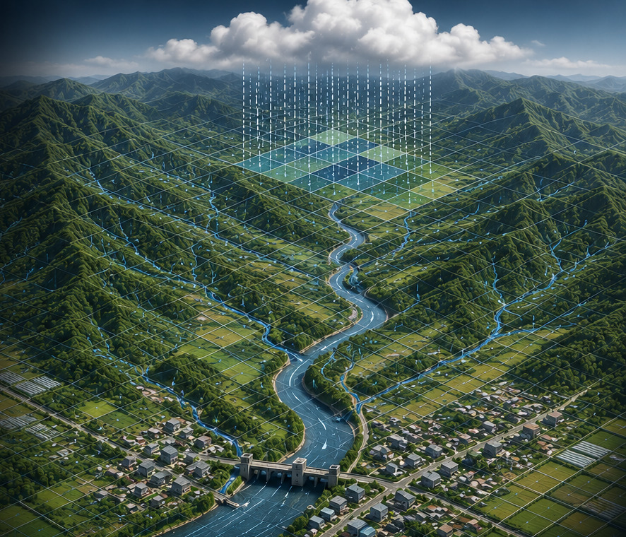
Follow spatial rainfall through infiltration, soil water and runoff.
Explore this topic →Connect rainfall, evapotranspiration, runoff and storage in one continuous water balance.
Explore this topic →Connect 1D river hydraulics, structures, river–floodplain exchange and 2D flooding.
Explore this topic →Connect InputStudio, NetCDF and viewers across preparation, execution and analysis.
Explore this topic →Explore the model and its capabilities through the overview video, presentation and 18 feature illustrations.
The video illustrates watershed processes; it is not a numerical simulation result.
Read the model overview →Explore model applications and their scope in public studies.
Rainfall location, terrain, soil and storage states shape the movement of water across computational cells.
Spatial rainfall, infiltration, surface/subsurface runoff and kinematic-wave routing form the hydrologic foundation.
K-DRUM connects soil water, evapotranspiration and snow storage/melt through time for continuous watershed simulation.
1D river networks, 2D inundation and bidirectional exchange are development-complete. Choose supported structure, terrain, boundary and solver configurations for each application.
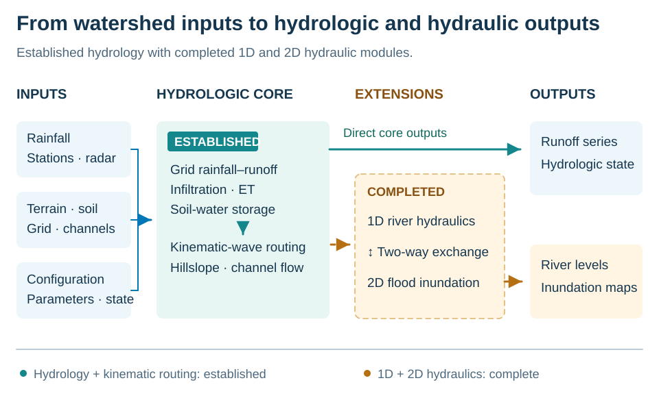
K-DRUM updates grid-cell storage through time to connect rainfall, infiltration, evapotranspiration and runoff. Initial states and continuous forcing are key conditions for interpreting results.
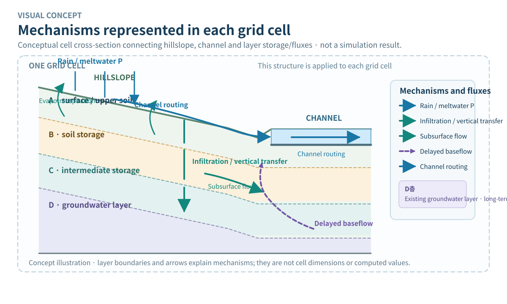
Spatial rainfall inputs are station or gridded data mapped to computational cells with consistent intervals and units. Missing periods and mapping errors can affect runoff calculations.
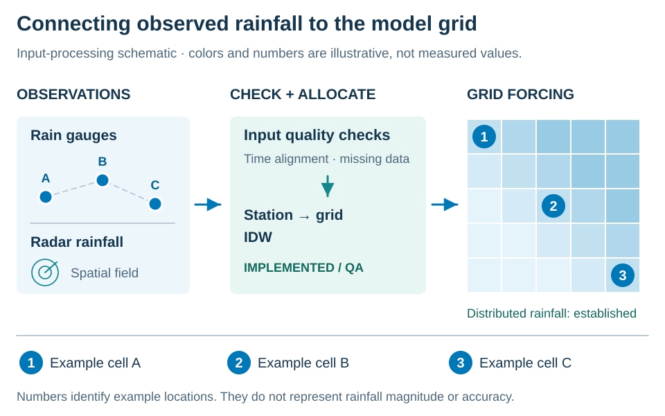
Understand which physics are retained and how they are computed over cells and time steps. Compare the approaches, then open the topics relevant to your analysis.
Kinematic, diffusion, local-inertial and dynamic waves describe equation approximations. Finite volumes/differences and explicit/implicit stepping describe numerical solution methods. Dynamic wave does not automatically mean implicit, nor explicit mean kinematic.
● retained · — omitted. A general comparison of depth-averaged equations; K-DRUM paths are distinguished below. Scroll the table horizontally on small screens.
| Approximation | Local acceleration | Advective acceleration | Depth gradient | Gravity / friction | Typical analysis |
|---|---|---|---|---|---|
| Kinematic wave | — | — | — | Gravity ≈ friction | Runoff routing / travel time |
| Diffusion wave | — | — | ● | Included | Gradual, stage-gradient-driven flow |
| Local inertia | ● | — | ● | Included | Unsteady flooding with small advection |
| Dynamic wave / Full SWE | ● | ● | ● | Included | Momentum changes / gravity waves |
Shallow refers to depth relative to the horizontal variation length, not just a small absolute depth. Depth averaging and a hydrostatic approximation reduce the role of vertical acceleration. Deep rivers can meet these assumptions; strongly vertical jets and circulation need additional treatment.
1D continuity: area A [m²], discharge Q [m³/s], lateral inflow per unit length qₗ [m²/s].
Illustrative momentum equation for a simple constant-width channel, omitting lateral momentum and additional forces. q = hu is unit-width discharge [m²/s], u velocity, h depth, S₀ bed slope and S_f signed friction slope.
Kinematic flow uses S_f ≈ S₀. Diffusion wave retains the surface-gradient balance but drops accelerations. Local inertia restores temporal acceleration; dynamic wave also retains advection. Spatial dimension (1D/2D) is a separate choice.
Theory references: USACE · Kinematic wave · Clawpack · Shallow-water equations
Uniform/nonuniform flow describes spatial variation at a given time; steady/unsteady flow describes temporal variation at a given location. Steady flow can be nonuniform. Kinematic routing uses a uniform-flow approximation but still computes time-varying discharge and storage through continuity.
Subcritical, critical and supercritical flow are flow regimes with Froude numbers below, equal to and above one in basic open-channel flow. They are distinct from upstream/downstream locations. A hydraulic jump is a transition from supercritical to subcritical flow with a rapid depth increase and energy dissipation. Gradually and rapidly varied flow describe the rate of spatial change.
Backwater is an upstream rise in water level caused by downstream stage or controls such as structures. It differs from drainage and does not necessarily involve flow reversal. Assess supercritical-flow and hydraulic-jump applications using the selected solver and relevant validation cases.
Theory reference: USACE · Mixed flow regimes
With little backwater and predominantly slope-driven routing, kinematic wave is a useful starting point. Separate generated runoff from hillslope/channel travel time.
Related K-DRUM capability →Water-surface and bed slopes can differ. Methods retaining surface gradients become relevant; faster changes increase the need to examine acceleration terms.
Related K-DRUM capability →Local inertia can be efficient where advective acceleration is small. Compare arrival time, depth and flow under matching terrain and boundary conditions.
Related K-DRUM capability →When advection and wave propagation matter, compare Full SWE. More complete equations do not automatically correct poor terrain, boundaries or inadequate resolution.
Related K-DRUM capability →Slope alone is insufficient. Velocity relative to gravity-wave speed (for example, the Froude number), forcing timescale, downstream control, geometry changes and target outputs all matter. Tidal boundary effects and rainfall-runoff travel time pose different questions.
Finite volumes update a cell’s conserved amount from boundary fluxes. A shared interface flux cancels in the sum over neighboring cells. Finite differences approximate derivatives from neighboring values and can also be conservative; the names alone do not rank accuracy.
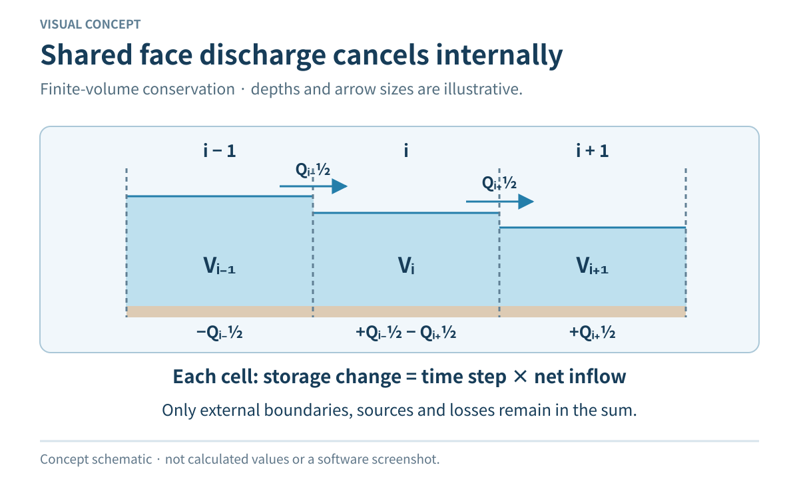
Illustrative conservative update of volume V [m³] using discharge Q [m³/s]. Sum signed flows over all faces when a cell has multiple boundaries.
Mass conservation alone does not make momentum representations equivalent. Kinematic routing closes discharge with a storage relation; local inertia uses previous flow and surface gradients; Full SWE also updates momentum fluxes.
Reconstruction and flux evaluation affect how strongly sharp changes are smeared. Higher-order reconstruction can improve smooth regions, while limiting is needed near abrupt changes. Continued change under refinement indicates that resolution convergence has not yet been established.
Explicit methods evaluate updates from known states. Implicit methods include new-time unknowns and require a coupled or nonlinear solve. Semi-implicit methods mix treatments across terms. These names describe time evaluation, not different physical processes.
Forward Euler: an illustrative explicit time step.
Backward Euler: an illustrative implicit time step, not a claim that every K-DRUM mode uses this formula.
Implicit stepping can still smear peaks and timing with large steps, and nonlinear iterations must converge. Explicit stepping must respect propagation relative to cell size. Stable completion does not establish temporal accuracy.
Illustrative Courant number for 1D shallow-water waves. Limits depend on the method; 2D geometry, sources and boundaries may impose additional restrictions.
Reduce the timestep and compare peak, arrival time and balance at key locations. Forcing intervals, internal steps and output intervals can differ; output timestamps do not reveal every internal step.
This overview summarizes the currently reviewed K-DRUM calculation approaches alongside the public capability descriptions. Options within a family may use different time-integration and boundary-condition combinations; interpret completion and application conditions using the current capability matrix.
Even with the same method name, supported boundary, structure and coupling combinations can differ. Use build documentation and capability scope to establish comparable cases.
Inflow discharge, downstream stage, tide, walls and open boundaries provide different information. Subcritical flow can transmit downstream-stage influence upstream; inflow alone does not determine stage. Boundary number and type must suit the flow regime and solver.
Excessive outflow from a shallow cell can produce negative depth. Available-water limits and wet/dry handling are needed; velocity near a depth threshold is sensitive because it divides discharge by small depth. Clipping depth alone is not a conservation check.
These are criteria for assessing a simulation, not a claim that every listed capability has passed every test.
Further theory on surface gradients and discretization: USACE · Diffusion-wave solver. External references explain general theory, not identical K-DRUM implementation or performance.
K-DRUM links surface and A/B/C/D-layer storage and transfer. Rain and melt supply infiltration or surface runoff; soil water supplies ET and subsurface flow. The D layer is an existing deep store whose delayed return contributes to post-storm response. Interlayer transfers cancel in a whole-domain budget, while ET, outlet export and external deep loss are separate boundary terms.
All terms refer to a common period/domain in volume [m³], or depth [mm] on a consistent area basis.
Green–Ampt uses wetting-front suction and the moisture difference across the front to estimate infiltration capacity. Suction matters relatively more at small cumulative infiltration; conductivity becomes dominant later. Actual entry cannot exceed water supplied at the surface. The storage increment and remaining surface excess must reconcile with the original supply.
Representative expression: Kₛ/f_c [length/time], F/ψf/Wsurface [length]. Actual ponding and initialization are treated separately.
ET links atmospheric demand to vegetation/root distribution but remains limited by available soil water. Empirical snow/melt calculations update water-equivalent storage with temperature and terrain/time modifiers; snow-water equivalent differs from physical snow depth. FAO is cited for ET concepts, not to claim every K-DRUM demand formula is identical to FAO-56.
All terms are interval water-equivalent depths. Melt transfers water into hydrology rather than removing it from the domain.
Theory and data references USACE HEC-HMS: Green and Ampt loss model ↗ · K-DRUM: long-term snowmelt application (2013) ↗ · FAO-56: evaporative demand and crop evapotranspiration ↗
Section X–Z coordinates define wetted area A, top width T, wetted perimeter P, hydraulic radius R=A/P and hydrostatic integral I₁ at stage η. Relative measured shape is retained and placed on the longitudinal bed. Changing width or bed elevation alters storage, conveyance and overflow conditions; it is not merely a visual adjustment.
A [m²], T/P/R [m], c [m/s]. c is the section-dependent free-surface wave speed.
The current dynamic-wave route combines a finite-volume spatial operator with network connectivity. Shared mass flux enters neighboring cells with opposite signs. Momentum flux includes Q²/A advection and gI₁ hydrostatic pressure, together with non-prismatic geometry and friction sources. HLLE-family fluxes and limited reconstruction options concern numerical stability/accuracy, not a different physical equation.
Conservative overview; non-prismatic pressure/geometry terms must not be replaced indiscriminately by a rectangular-channel formula.
Backward Euler and TR-BDF2 are connected to the present implicit 1D route. Backward Euler solves a new-time residual; TR-BDF2 combines a trapezoidal intermediate stage with a BDF2 stage. Nonlinear iterations reevaluate states, geometry and fluxes, solve linearized systems and reduce residuals. Implicit stability does not eliminate timestep sensitivity in peak magnitude or arrival time.
Implicit residual and Newton-correction concept: X state, M conserved quantities, J residual Jacobian.
Branches/confluences require consistent flow signs, junction storage and ownership of connected faces. Upstream flow, lateral input, reservoir release and downstream stage are distinct boundary inputs and must not be applied twice. Local-inertial paths omit advective momentum; the DWNET name alone does not identify the equations. Implementation completion remains separate from a particular basin’s observation-based validation.
Theory and data references USACE: 1D unsteady-flow hydrodynamics ↗ · Hodges (2019): conservative finite-volume Saint-Venant forms ↗
Local inertia retains local acceleration but omits advective momentum. A face’s unit-width discharge q combines previous flow, surface-gradient acceleration and friction damping. The representative semi-implicit friction update below is used with effective face depth, terrain and available-volume handling. Both horizontal face-flow directions contribute to the same storage update.
q [m²/s], hf/η/Δx [m], Δt [s]. This representative form excludes the separate details of dry-face handling and multidirectional flow.
Multiplying unit-width q by face length gives volumetric discharge Q. Net interval volumes update cell storage, from which depth/stage follows the terrain–storage relationship. Rainfall, drainage and river exchange enter as sources/sinks on the same interval. Excluded cells and impermeable faces are different conditions and are represented separately.
V [m³], Lf [m]; σ is positive for inflow to a cell and negative for outflow.
Full SWE evolves depth h and both unit-width discharges hu/hv. HLL-family interface calculations update advective and hydrostatic momentum fluxes along with mass, with terrain/friction sources. HLL approximates the Riemann problem using a bounding wave-speed range. Reconstruction and time order must be assessed with resolution, wet/dry and boundary handling, using supported grid/coupling configurations.
h [m], u/v [m/s]. These plan-view 2D fluxes differ from pressure integrals for arbitrary 1D sections.
Outflow beyond the water available in a shallow cell would create negative depth. Available volume, effective depth, substepping and retry handling must work together. Completion alone does not establish rapid-flow accuracy; compare depth, velocity, front movement and balance. Multi-resolution patches aggregate or retain source terrain rather than generating new terrain detail.
Representative shallow-wave timing relation; 2D directions, sources and coupling can impose additional limits. C is not assumed universal across modes.
Theory and data references Bates, Horritt & Fewtrell (2010): local-inertial formulation ↗ · Clawpack Riemann book: shallow-water equations ↗ · Hodges (2019): conservative finite-volume Saint-Venant forms ↗
River head, floodplain head and interface crest determine overflow or return. The time-integrated exchange is removed from one domain and added to the other. Directional gross volumes may be reported as positive magnitudes but differ from net transfer. Exchange closure, full-domain water balance and momentum conservation are distinct tests.
All quantities are volumes [m³] over the same accepted interval.
The current bidirectional route preserves interval-start states and iterates hydraulic response and exchange. Each trial must use the same starting state; otherwise repeated trials would move the same water repeatedly. Final exchange and stage response are checked before jointly accepting the two domains, with consistent retries for unacceptable intervals. Outputs use accepted states and transfer.
Measured sections can include submerged channels absent from surface DEMs. Compare 1D bed/bank geometry with 2D terrain using a common datum. Arbitrarily modifying crests or inserting fabricated sections to avoid solver difficulties is not validation. Distinguish illustrative sample geometry from measured application data.
Distinguish bidirectional 1D dynamic-wave/2D local-inertial coupling from 1D local inertia, selectable Full SWE and terrain-based inundation screening. The existence of a capability does not imply every solver/boundary combination. Completed core functionality is therefore presented with its supported configuration scope.
Theory and data references Bates, Horritt & Fewtrell (2010): local-inertial formulation ↗ · Hodges (2019): conservative finite-volume Saint-Venant forms ↗ · USACE: 1D unsteady-flow hydrodynamics ↗
Structure hydraulics calculates throughflow from heads, geometry and opening. Reservoir operation chooses releases using stage/storage, capacity, minimum flow and ramp constraints. Forecast pre-release and multi-reservoir scenarios extend this decision-support layer; they do not grant real-facility control or substitute for operational approval.
Storage [m³] and discharge [m³/s] continuity; use the H–V relationship and consistent initial stage/storage.
NSE expresses squared-error reduction relative to the observed mean, and RMSE gives error in original units. Volume bias describes over/under-export, while peaks and arrival timing describe flood response. Use matched valid timestamps and declare missing-data handling, period and units. Multi-site reporting differs from simultaneous optimization of every parameter.
This illustrative PBIAS convention is positive for overprediction; check the convention in the actual report.
Calibration selects parameters to reproduce observations; independent validation evaluates unused periods/data. Parallel or memory optimization reduces runtime/resource cost rather than calibrating physical response. Record configuration, initial state and data scope separately so the effect of each change remains interpretable.
Theory and data references USACE HEC-HMS: reservoir routing ↗ · USACE: hydraulic structures and flow equations ↗ · Nash & Sutcliffe (1970): river-flow forecasting and model evaluation ↗
Warm-up adjusts initial states; a cache reuses part of that preparation. HotStart resumes the time/state covered by its saved format. Restoring hydrologic state does not imply restoration of every snow, reservoir and hydraulic variable. Compare uninterrupted and restarted results at matched times and verify model/input/format compatibility.
Coordinates, dimensions, units, time reference and missing-value markers define array meaning. Watershed cells, river sections and flood grids differ spatially and may have different output intervals. Link plots/maps by actual time/location without changing producer values, and distinguish partial from finalized files.
Upstream/downstream routing and network coupling impose ordering constraints. Parallel work still incurs waiting, memory and I/O costs, and overhead can dominate for small domains. Distinguish the current OMP-focused package from other execution families and measure output consistency and elapsed time on matched workloads/hardware.
Completion of the 1D river and 2D flood solvers describes implementation. Suitability for a particular basin depends on data, boundaries, resolution and observational evaluation. Officially downloadable files follow the actual MyWater release and terms. Ongoing application validation is therefore not a reason to relabel a completed solver as unfinished.
Theory and data references Unidata: NetCDF data model ↗ · OpenMP: specifications ↗ · K-DRUM: current capability status and scope ↗
Concept diagrams connect rainfall, infiltration, evapotranspiration, runoff, hillslope/channel flow and A/B/C/D layers. They are not simulation results; the existing D layer is distinguished from its long-term runoff extension. Image labels follow the selected language.
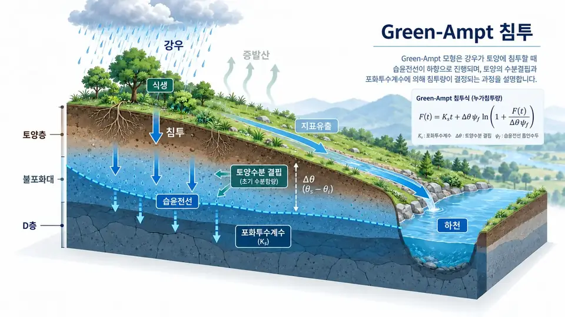
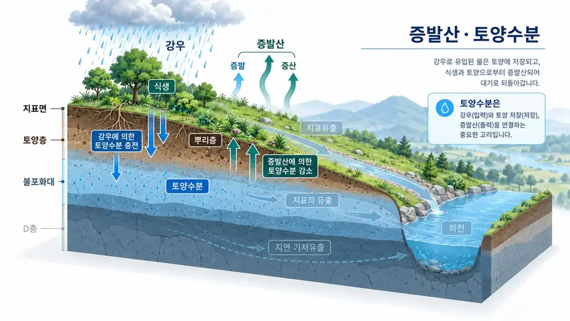
Stored soil water returning to the atmosphere.
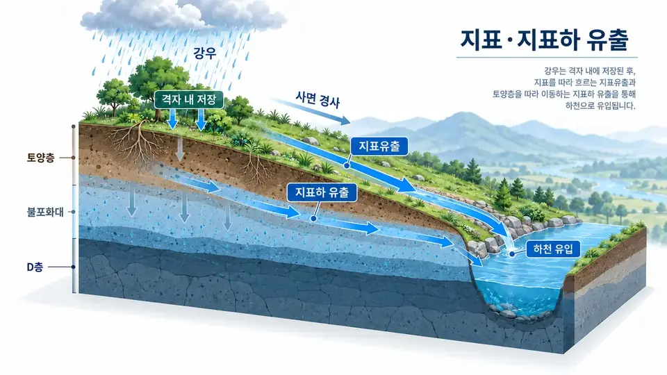
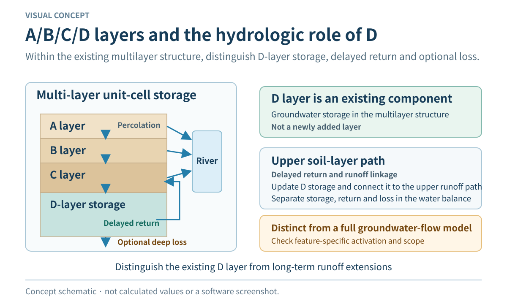
Existing groundwater storage and its long-term runoff extension.
Choose an area first, then read each capability in the order purpose → mechanism → illustration → interpretation checks. Complete/implemented capabilities, tools in development and research/disabled functions are distinguished.
When rainfall varies across the watershed
Cell rainfall series, basin/subbasin rainfall and accumulated rainfall volume.
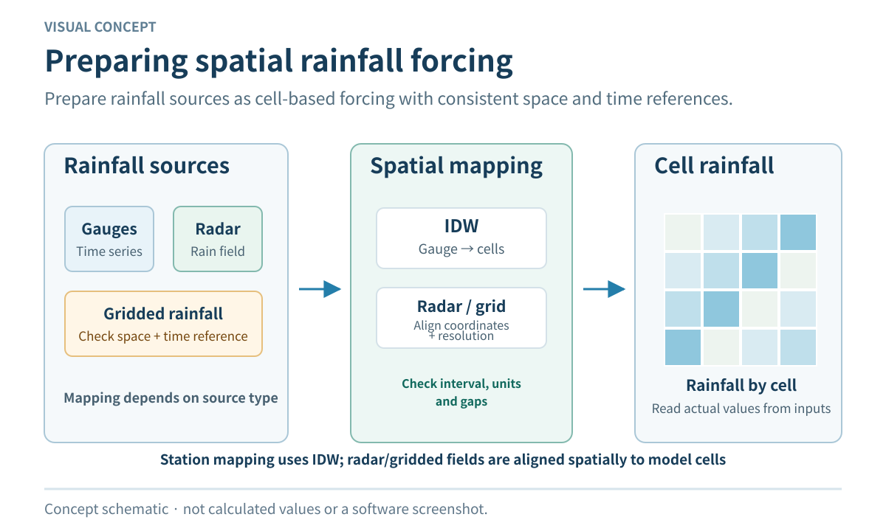
Follow how gauge, radar and gridded rainfall use different spatial mappings before becoming cell-based rainfall forcing.
Station series require spatial mapping, whereas radar and gridded fields are connected through their spatial relationship to model cells. Rainfall depth is distinguished from intensity, and interval depths are multiplied by cell area to form water-balance inputs. Equal basin totals can produce different arrival times and peaks when rainfall concentration moves.
Rainfall time series or fields, station positions and coordinate reference, model cells, timestamps and missing-data flags.
Pᵢ: interval rainfall [mm]; Aᵢ: cell area [m²]; Vₚ: rainfall volume [m³]. This is the aggregation definition.
Cell rainfall series, basin/subbasin rainfall and accumulated rainfall volume.
Theory and data references K-DRUM: radar rainfall and GIS-based runoff (2012) ↗
Read the related theory and numerical method →Align time zone, accumulation-window convention, mm versus mm/h and the valid spatial footprint.
When mapping station rainfall with IDW
Cell rainfall and the spatial pattern of rainfall concentration.
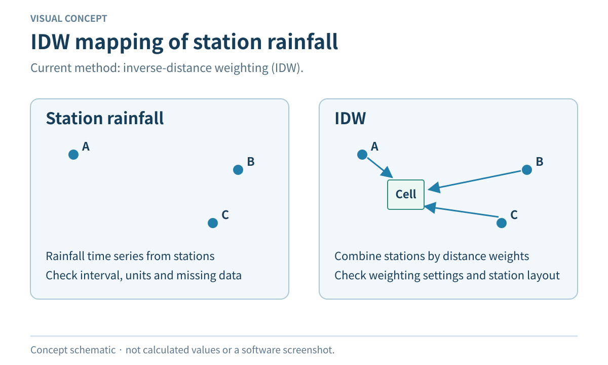
Illustrates station rainfall mapped to model cells with IDW distance weighting; no observed or calculated values are shown.
Nearby observations receive larger weights, normalized by the total weight. A coincident station requires explicit zero-distance handling. Missing observations are not zero rainfall, so valid-data selection precedes interpolation. IDW is the station-rainfall mapping method described here.
Valid station rainfall, station-to-cell distances and distance-weight settings.
Pⱼ: station rainfall; dⱼ: distance; p: weighting exponent. All rainfall values must use the same units.
Cell rainfall and the spatial pattern of rainfall concentration.
Theory and data references K-DRUM: radar rainfall and GIS-based runoff (2012) ↗
Read the related theory and numerical method →Unsampled areas are sensitive to station layout. Evaluate elevation correction separately from distance weighting.
When reviewing rainfall distribution and input quality
Adjusted rainfall and input-quality information, including missing or suspect values.
Elevation adjustment changes spatial forcing to represent an assumed elevation dependence. Quality checks identify missing, negative, suspicious or incorrectly timed observations. Keeping these operations separate makes changes traceable from source data to adjusted rainfall and quality flags.
Station/cell elevations, source rainfall, missing/outlier rules and elevation-adjustment settings.
Adjusted rainfall and input-quality information, including missing or suspect values.
Theory and data references K-DRUM: radar rainfall and GIS-based runoff (2012) ↗
Read the related theory and numerical method →Elevation adjustment does not repair missing data automatically. Check local observations and basin totals before and after adjustment.
When checking gaps in the rainfall used for a run
Coverage by data type, missing periods and completeness summaries.
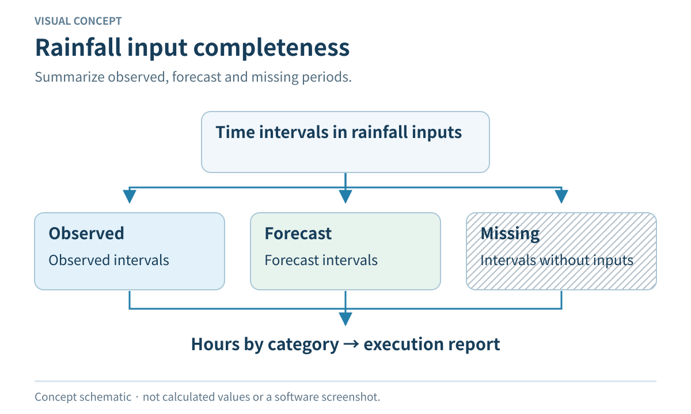
Read the three interval categories; obtain actual durations or proportions from the run report.
Expected timestamps are compared with actual records to locate gaps and distinguish observation and forecast coverage. A high total record count can still hide a consecutive gap or missing storm peak. Completeness reporting neither interpolates missing rainfall nor generates forecasts.
Simulation start/end times, record type, cadence and validity.
C: an illustrative completeness percentage, interpreted with the actual report categories.
Coverage by data type, missing periods and completeness summaries.
Theory and data references K-DRUM: current capability status and scope ↗
Read the related theory and numerical method →Use consistent end-time inclusion and duplicate-record conventions.
When checking inputs before starting a run
Actionable errors/warnings, linkage checks and run readiness.
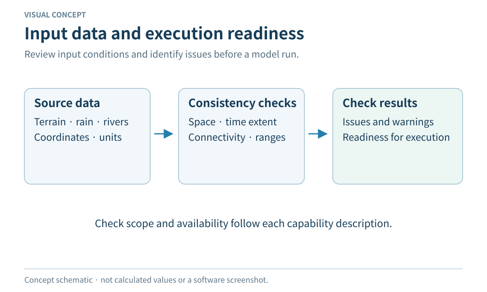
Follow source data, consistency checks and check results. This is not an input-editor screenshot.
Readable files are distinguished from a physically complete project. Checks reconcile coordinate systems, grid layouts, identifiers, mandatory inputs and temporal coverage, while retaining flags for provisional values and unconnected objects. Passing establishes readiness rather than predictive performance; editor interfaces and check coverage depend on the tool.
Grid, river network, cross sections, boundaries, structures, controls and forcing series.
Actionable errors/warnings, linkage checks and run readiness.
Theory and data references K-DRUM: current capability status and scope ↗
Read the related theory and numerical method →Resolve warnings using source evidence rather than inventing missing geometry, then repeat the checks.
When examining how rainfall infiltrates the soil
Interval/cumulative infiltration, surface excess and soil-storage change.
Distinguish rainfall at the surface, downward infiltration and wetting-front movement. Image labels are in Korean.
A distinct wetting front represents infiltration driven by gravity and suction. The relative suction contribution declines as cumulative infiltration increases. Actual infiltration is bounded by both capacity and available water; infiltrated water enters soil storage and subsequent layer-flow calculations.
Hydraulic conductivity, wetting-front suction, initial/saturated water content, rainfall and available surface water.
Simplified ponded capacity: f_c and Kₛ [length/time]; ψf and F [length]; θ [volumetric water content]. Available water and initialization also enter the implementation.
Interval/cumulative infiltration, surface excess and soil-storage change.
Theory and data references USACE HEC-HMS: Green and Ampt loss model ↗ · K-DRUM: radar rainfall and GIS-based runoff (2012) ↗
Read the related theory and numerical method →Keep conductivity and timestep units consistent and review saturation and impervious-area settings.
When tracing runoff over the surface and through the soil
Surface/subsurface runoff, layer storage and contributions routed to rivers.
Follow the surface and soil-layer pathways toward the channel. Image labels are in Korean.
A cell combines surface and layered storage. Incoming water updates each store and is partitioned into interlayer transfer and downslope flow. Fast surface and slower soil/deep-store responses produce different contributions to river inflow. Generated runoff differs from downstream discharge after routing.
Infiltration, rainfall/melt, A/B/C/D states, soil properties/depth, slope and drainage connectivity.
Layer budget using interval volumes; Iₖ and Oₖ include vertical and lateral transfers.
Surface/subsurface runoff, layer storage and contributions routed to rivers.
Theory and data references K-DRUM: radar rainfall and GIS-based runoff (2012) ↗
Read the related theory and numerical method →Interlayer exchange is internal and must not be counted again as basin outflow.
When simulating across rainfall events and seasons
Long-term flow/state series, period balances and storage changes.
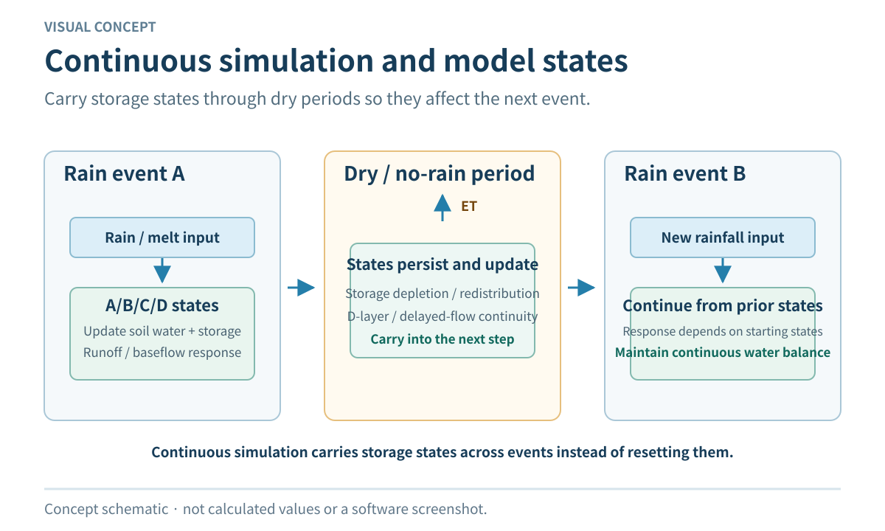
Notice how storage carries between rainy and dry periods.
Evapotranspiration, storage and drainage continue between storms, updating antecedent conditions for later events. Seasonal snow and soil-water changes influence both floods and low flows. Spin-up or reused initialization is identified separately where the initial state strongly affects the analysis period.
Continuous rainfall/meteorology, initial storage, soil/vegetation properties and simulation period.
Conservation concept for carrying storage to the next computational time.
Long-term flow/state series, period balances and storage changes.
Theory and data references K-DRUM: long-term snowmelt application (2013) ↗
Read the related theory and numerical method →Compare multi-year evapotranspiration and balance using aligned periods, gap handling and storage endpoints.
When examining soil moisture between rainfall events
Actual ET, layer depletion and continuous soil-water states.
Follow stored soil water returning to the atmosphere through vegetation and the surface. Image labels are in Korean.
Evaporative demand is connected to vegetation and the root zone, then water is allocated and removed from eligible layers. Moisture shortage limits actual evapotranspiration below demand, with corresponding soil-water depletion. ET is an external water loss, distinct from redistribution between layers.
Meteorology, land cover/seasonal LAI, root depth and layer water availability.
Illustrative water-availability bound: ETₐ actual rate, ETd demand, Wavailable water on a consistent area basis.
Actual ET, layer depletion and continuous soil-water states.
Theory and data references FAO-56: evaporative demand and crop evapotranspiration ↗ · K-DRUM: long-term snowmelt application (2013) ↗
Read the related theory and numerical method →Distinguish the demand calculation from moisture limitation and check that extraction is consistent with layer water availability.
When examining runoff during snow accumulation and melt
Snow-water equivalent, meltwater supply and seasonal runoff contribution.
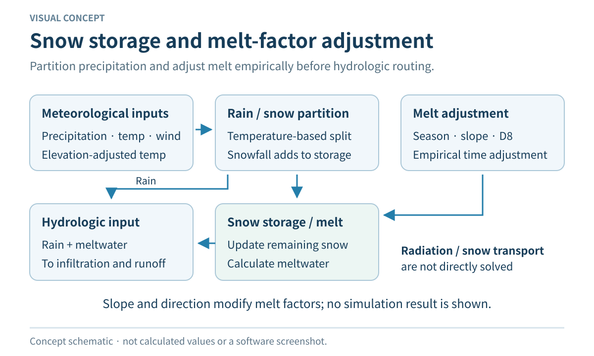
Follow rain/snow partitioning, melt-factor adjustment, snow storage and meltwater. Terrain conditions modify the melt factor.
Temperature partitions rain and snowfall, with snowfall retained as snow-water equivalent. Empirical melt incorporates elevation-adjusted temperature and terrain/time modifiers, as well as wind and rainfall effects. Melt is removed from snow storage and supplied to infiltration/runoff. This differs from a complete snow energy balance or downslope snow transport.
Temperature/elevation, rainfall/wind, slope/D8 direction, time of day and snow-water equivalent.
Interval water-equivalent snow budget; this expression is distinct from the empirical calculation of M.
Snow-water equivalent, meltwater supply and seasonal runoff contribution.
Theory and data references K-DRUM: long-term snowmelt application (2013) ↗
Read the related theory and numerical method →Distinguish water-equivalent depth from physical snow depth; melt cannot exceed available snow storage.
When preparing initial soil and runoff states
Adjusted initial states, iteration history and target-flow residuals.
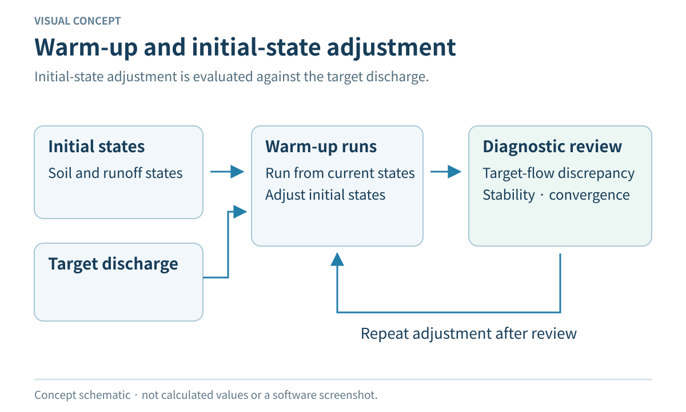
Follow adjustment, target-site review and iteration; this is different from simply restoring a checkpoint.
Repeated calculations adjust initial states and assess target-flow error and state change against stopping conditions. Unlike parameter calibration, warm-up determines a starting state for the chosen parameters. A reusable hydrologic state may reduce repeated preparation.
Initial storage/flow, target-site flow and iteration/stopping conditions.
eQ [m³/s] illustrates initial-flow mismatch; use the configured absolute/relative stopping criteria.
Adjusted initial states, iteration history and target-flow residuals.
Theory and data references K-DRUM: current capability status and scope ↗
Read the related theory and numerical method →Align target-flow timing with initialization and separate warm-up outputs from analysis-period statistics.
When continuing from a previously saved model state
Restored states and resumed results that can be compared with an uninterrupted run.
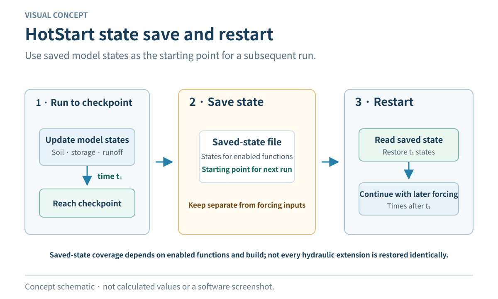
Follow the saved state becoming the starting point for the next computation.
Restart resumes from a saved state and time. A cache of hydrologic warm-up state can shorten initialization but is not equivalent to restoring every snow, reservoir and hydraulic variable. Check restored scope and time identity rather than combining incompatible states.
Saved state, grid/network/time identity and model/state-format compatibility.
X denotes the state covered by the selected format; variables outside that coverage are not implied to be restored.
Restored states and resumed results that can be compared with an uninterrupted run.
Theory and data references K-DRUM: current capability status and scope ↗
Read the related theory and numerical method →Compare uninterrupted and restarted runs under identical conditions for storage, discharge and time consistency.
When investigating persistent low flows after rainfall
Deep-storage change, delayed return/baseflow contribution and deep loss.
Read the A/B/C/D multilayer structure and river contributions first, then distinguish the existing D-layer storage from delayed return and optional deep loss.
The D layer already belongs to the multilayer runoff structure. Its extension calculates storage-dependent delayed return and optional deep loss within available water to represent long-term low flows. Transfers to upper soil or rivers are internal; deep loss beyond the domain is external. This is not a spatial aquifer-head solver.
D-layer storage, inflow from upper layers, delayed-return/deep-loss settings and downstream-stage conditions.
Illustrative D-layer interval-volume balance; internal return must not be counted twice as external outflow.
Deep-storage change, delayed return/baseflow contribution and deep loss.
Theory and data references K-DRUM: long-term snowmelt application (2013) ↗
Read the related theory and numerical method →Do not treat the D layer itself as newly introduced. Assess basin-specific response using recession curves and long-term balance.
When representing different hillslope and channel slopes
Domain-specific slopes and corresponding routing responses.
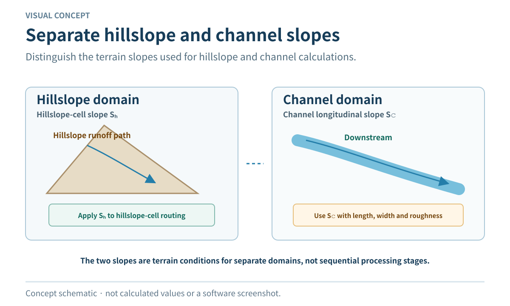
Hillslope and channel are separate calculation domains, not sequential stages. Follow where Sₕ and S𝚌 are applied.
Terrain slope is not automatically equated with river-bed slope: each calculation receives its appropriate gradient. Hillslope runoff and channel travel have different geometry and roughness. Slope treatment is checked separately from drainage connectivity and from the water-surface gradient used by hydraulic solvers.
Hillslope gradient, longitudinal channel slope, flow direction and reach length.
Δz and L [m]; S [m/m]. Use the geometry of the appropriate domain.
Domain-specific slopes and corresponding routing responses.
Theory and data references USACE HEC-HMS: Kinematic-wave channel routing ↗
Read the related theory and numerical method →Distinguish dimensionless elevation-drop/distance slope from degrees or percent slope.
When tracing hillslope runoff downstream
Cell hillslope outflow/storage and lateral river contributions.
Continuity and a storage–outflow relation update upstream/local inflow and downstream outflow conservatively. Discharge follows a gravity–friction balance rather than bidirectional backwater propagation as in dynamic-wave hydraulics. Prescribed drainage directions and soil-layer responses route hillslope contributions toward rivers.
Generated runoff, connectivity, slope, length, roughness and storage.
Representative continuity and closure: A [m²], Q [m³/s], ql [m²/s]; α,m represent geometry and roughness.
Cell hillslope outflow/storage and lateral river contributions.
Theory and data references USACE HEC-HMS: Kinematic-wave channel routing ↗ · K-DRUM: radar rainfall and GIS-based runoff (2012) ↗
Read the related theory and numerical method →Separate runoff generation from routing and assess whether backwater-affected areas require a hydraulic solver.
When routing watershed inflows along channels
Channel flow/storage and outlet or subbasin hydrographs.
Channel storage change balances the difference between incoming and outgoing flow. Hillslope and upstream contributions enter a nonlinear storage–outflow calculation and pass along prescribed connectivity. Kinematic routing supports efficient discharge propagation; measured-section stage, backwater and flow reversal belong to the separate 1D hydraulic path.
Upstream/lateral inflows, channel width, length, slope, roughness and routing direction.
Reach volume V [m³], discharge Q [m³/s]. Transfers must not be consumed twice across routing stages.
Channel flow/storage and outlet or subbasin hydrographs.
Theory and data references USACE HEC-HMS: Kinematic-wave channel routing ↗ · K-DRUM: radar rainfall and GIS-based runoff (2012) ↗
Read the related theory and numerical method →Do not use a single kinematic rating to explain backwater reaches where the same discharge can occur at different stages.
When investigating water transfer from rivers to deep storage
River infiltration, D-layer storage gain and transfer balance.
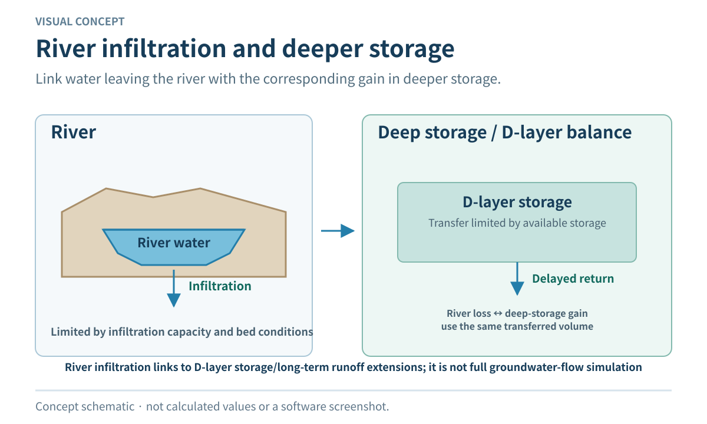
Match river loss with D-layer storage gain using the same transferred volume, and distinguish it from later delayed return.
Transfer is bounded by infiltration capacity, available channel water and receiving-store capacity. The removed river volume is matched to deep-storage gain, distinguishing internal exchange from externally lost water. This supports consistent interpretation of recession and baseflow.
River water, bed infiltration properties, D-layer storage capacity and timestep.
All terms are interval volumes [m³]; this expresses the transfer bound.
River infiltration, D-layer storage gain and transfer balance.
Theory and data references K-DRUM: current capability status and scope ↗
Read the related theory and numerical method →Separate retained internal transfer from loss outside the domain to avoid double counting.
When terrain data do not adequately describe the river bed
Supplemented hydraulic terrain and cross-section/DEM consistency information.
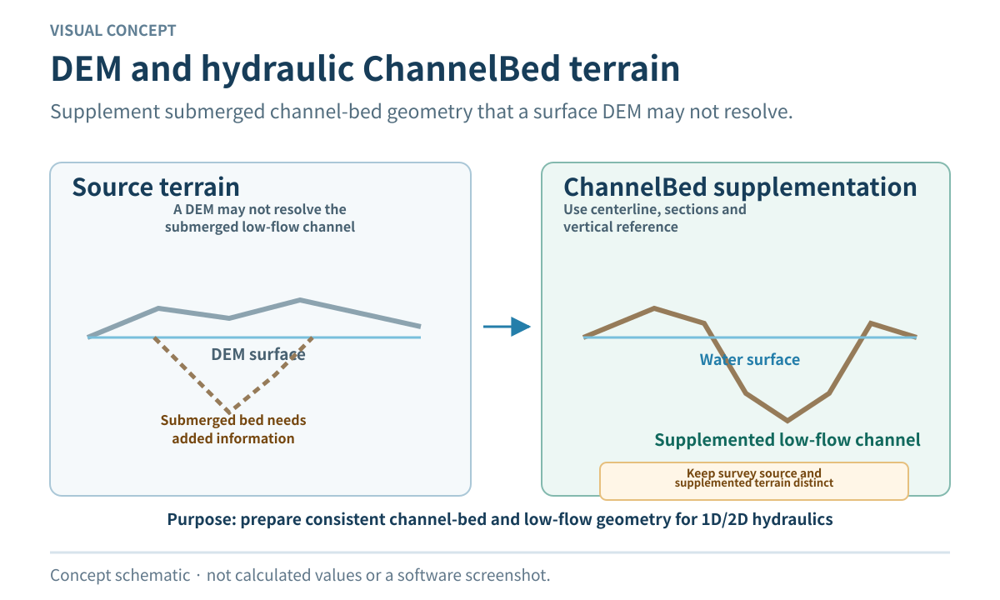
Compare the DEM surface, unresolved submerged channel and the supplemented hydraulic terrain side by side.
A surface DEM may lack submerged bathymetry. Relative cross-section shape is placed using longitudinal bed elevations and reconciled with banks and surrounding terrain. Preserving 1D section shape and connecting 2D terrain are different tasks; a finer DEM alone does not reconstruct missing underwater geometry.
DEM, centerline, measured/design sections, bed elevations, bank positions and vertical datum.
η water-surface elevation, zbed bed elevation and h depth [m] must share a datum.
Supplemented hydraulic terrain and cross-section/DEM consistency information.
Theory and data references USACE: 1D unsteady-flow hydrodynamics ↗
Read the related theory and numerical method →Align vertical datums and distinguish measured from supplemented or assumed geometry.
When checking inflows, outflows and changes in storage
Balance terms in volume/equivalent depth, residuals, relative error and internal-transfer interpretation.
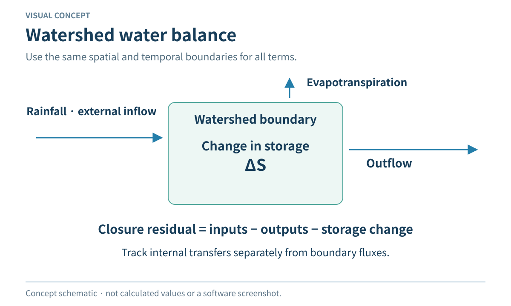
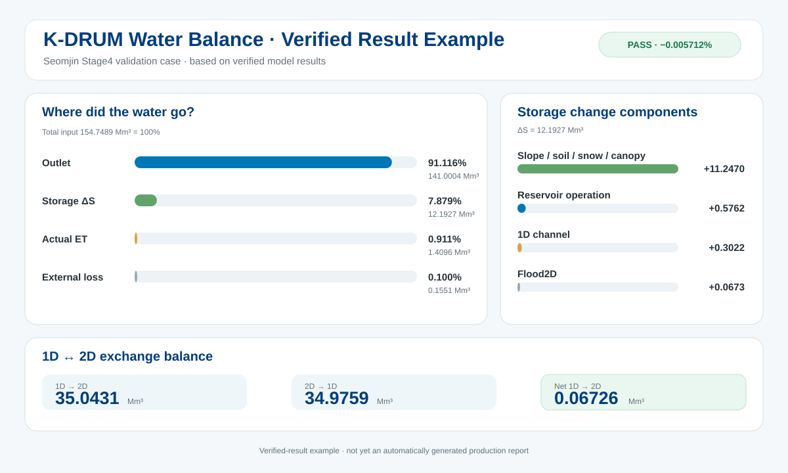
Distinguish boundary fluxes from changes in storage inside the watershed.
Process volumes are aggregated over a common period and domain to explain the fate of incoming water. Changes in soil, snow, channel and reservoir storage are tracked with internal transfers, while only boundary exits enter external losses. A small residual demonstrates accounting consistency, not observation-based predictive accuracy.
Rainfall, external inflow, outlet flow, ET, deep loss and initial/final storage.
All terms [m³]; internal transfers cancel over the combined domain.
Balance terms in volume/equivalent depth, residuals, relative error and internal-transfer interpretation.
Theory and data references Hodges (2019): conservative finite-volume Saint-Venant forms ↗
Read the related theory and numerical method →Choose a period and water-balance domain, then use consistent units for accumulated quantities. Integrate discharge (m³/s) over time to obtain volume (m³); convert depths (mm) using the corresponding area.
| Term | Contents | Interpretation |
|---|---|---|
| Inputs | Rainfall and external inflows | Total water entering the water-balance domain |
| Outputs and losses | Outflow, evapotranspiration and losses leaving the domain | Count boundary outputs separately from internal transfers |
| Storage change | Final storage minus initial storage | Water retained in or released from soil, channels and other stores |
Residual = accumulated inputs − accumulated outputs and losses − storage change
This is a general water-balance definition. First check the terms and sign convention in the actual report. Relative error (%) depends on whether its denominator is rainfall, total inflow or another reference.
Integrate flow over time and multiply depth by area; check the relative-error denominator and hydrologic/hydraulic storage domain.
When checking water exchanged between river and floodplain
Cumulative volumes in each direction, net exchange and inter-domain transfer residual.
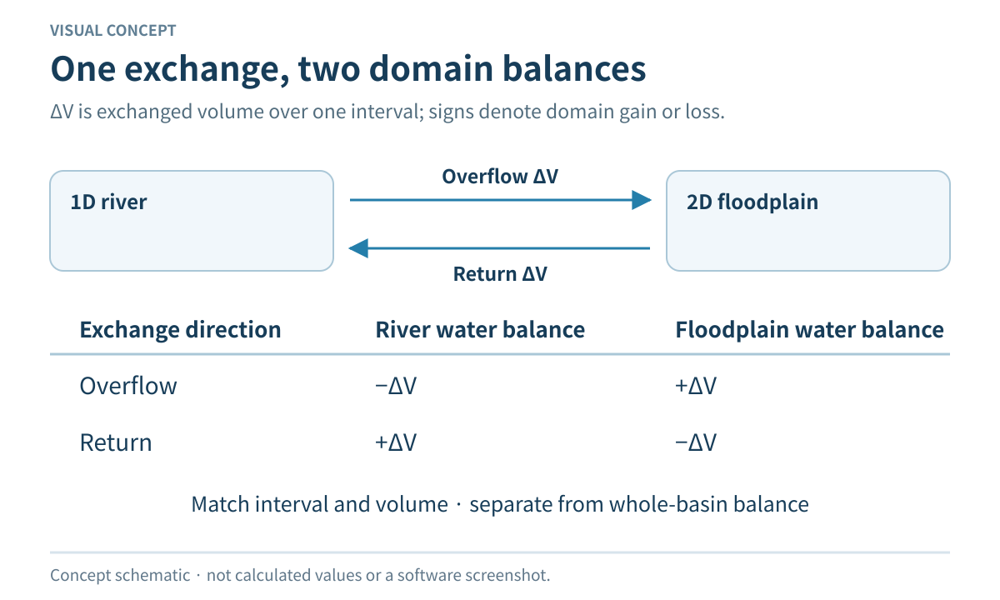
Read opposite signed entries for the same exchange volume, separating overflow and return flow.
Water leaving 1D enters 2D, and return flow leaving 2D enters 1D. Trial exchanges from internal iterations are separated from accepted transfers to avoid double counting. Gross directional totals and net transfer distinguish inundation from return. Exchange conservation is a core check, separate from whole-basin balance or momentum conservation.
Accepted-interval exchange fluxes/volumes, domain storage and interface mapping.
Positive Vex denotes 1D→2D; the signs reverse for return flow.
Cumulative volumes in each direction, net exchange and inter-domain transfer residual.
Theory and data references Hodges (2019): conservative finite-volume Saint-Venant forms ↗ · Bates, Horritt & Fewtrell (2010): local-inertial formulation ↗
Read the related theory and numerical method →Match interval, sign and units; stage errors and exchange-balance errors are different quantities.
When reviewing run settings and warnings together
Run summaries combining balance, input quality, output state and timing.
Records the conditions and period that produced the outputs. Separating initialization, computation and output timing helps explain runtime changes. Warnings, partial results and completion state accompany the hydrographs rather than treating file existence as proof of complete execution.
Run mode/version, period, input checks, initialization, solver and output status.
Run summaries combining balance, input quality, output state and timing.
Theory and data references K-DRUM: current capability status and scope ↗
Read the related theory and numerical method →Do not equate end-to-end elapsed time with cumulative solver timings that may include repeated or rejected trials.
When comparing different parts of a watershed
Subbasin summaries, target-site hydrographs and contribution comparisons.
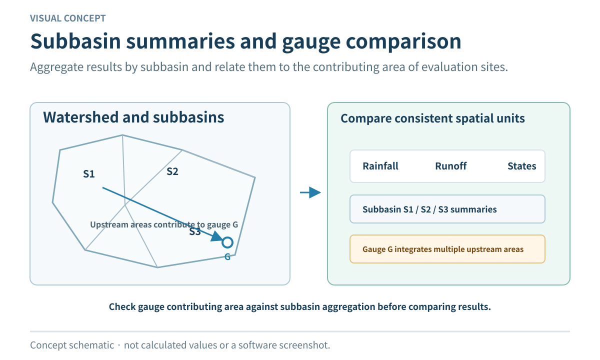
Distinguish S1/S2/S3 subbasin summaries from gauge G, which may integrate contributions from multiple upstream areas.
Distinguishes locally generated contributions from outlet flow accumulated from upstream. Area weighting and connectivity support interpretation of rainfall and runoff across subbasins, revealing spatial differences hidden by the overall outlet. Multi-site reporting is not simultaneous automatic calibration of all subbasins.
Subbasin delineation/connectivity, target sites and rainfall/runoff/storage outputs.
Example of area weighting; accumulated discharge follows network connectivity separately.
Subbasin summaries, target-site hydrographs and contribution comparisons.
Theory and data references K-DRUM: radar rainfall and GIS-based runoff (2012) ↗
Read the related theory and numerical method →Match gauge drainage area with the aggregation domain and avoid double counting upstream totals as local contributions.
When evaluating parameter sets against observed discharge
Candidate performance, selected parameters and observation/simulation comparisons.
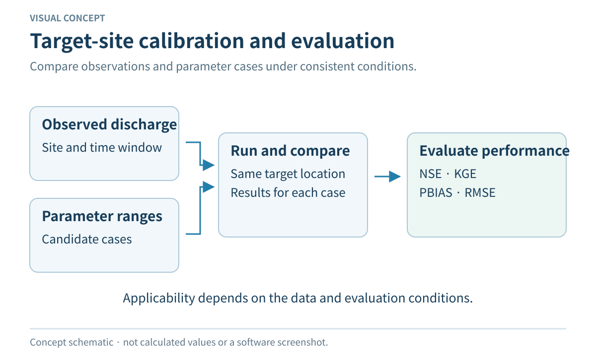
Follow observations and candidate parameters into a common evaluation; no optimization performance is demonstrated by the schematic.
Grid search or one-at-a-time changes compare parameter candidates. NSE, KGE, PBIAS and RMSE emphasize different aspects of variability, correlation/bias, volume bias and error magnitude. An independent period and physically plausible bounds help limit event-specific overfitting.
Observed flow/stage, evaluation period, parameter ranges/combinations and objectives.
NSE is dimensionless and undefined for zero observed variance; align times and handle missing values first.
Candidate performance, selected parameters and observation/simulation comparisons.
Theory and data references Nash & Sutcliffe (1970): river-flow forecasting and model evaluation ↗
Read the related theory and numerical method →A better single score does not imply improvement of peak, timing and low flow simultaneously.
When deciding which subbasins and target locations need calibration
Site-wise performance, spatial response before/after calibration and parameter application scope.
First assess which subbasin responses contribute to target-site differences, then evaluate selected parameter combinations. Recheck other sites and periods after calibration. Downstream mismatch cannot automatically be assigned to one upstream parameter; parameter application areas must match actual subbasin connectivity.
Subbasin/target-site mapping, observations, parameter candidates and spatial diagnostics.
Site-wise performance, spatial response before/after calibration and parameter application scope.
Theory and data references Nash & Sutcliffe (1970): river-flow forecasting and model evaluation ↗
Read the related theory and numerical method →Subbasin reporting, selected-site calibration and simultaneous all-site optimization are different capabilities.
When checking whether output files were completed correctly
Output readiness, missing/incomplete records and the available analysis period.
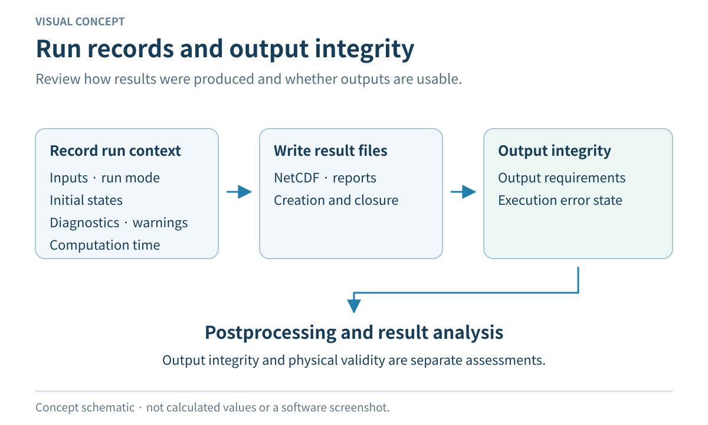
Follow file creation, output checks and handover to postprocessing.
Tests required variables, dimensions, valid values and coverage rather than mere existence. Partial files from ongoing/interrupted runs are distinguished from finalized outputs so later analysis does not read an incorrect period. File integrity and physical validation against observations serve different purposes.
Output files/metadata, required variables, last stored timestamp and completion state.
Output readiness, missing/incomplete records and the available analysis period.
Theory and data references Unidata: NetCDF data model ↗
Read the related theory and numerical method →Inspect final timestamp, units, spatial/time reference, invalid values and finalization together.
When exploring water-level and discharge simulation in river networks
Network stage, discharge, velocity, section profiles and hydraulic storage.
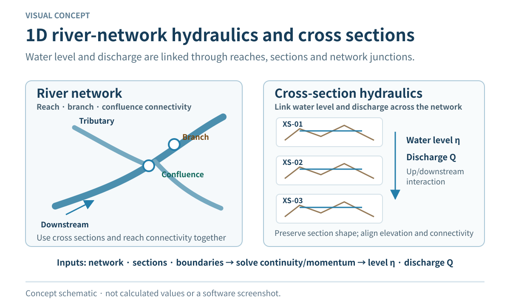
Follow how reaches, branches, confluences and cross sections connect water level η and discharge Q within the same hydraulic network.
Development of the 1D hydraulic capability is complete. Local-inertial and dynamic-wave paths are distinguished by their treatment of advective momentum. The dynamic-wave network combines section metrics and conservative interface fluxes; its implicit path uses Backward Euler/TR-BDF2 and nonlinear iteration. Measured section shape is retained while being placed on longitudinal bed elevations rather than universally replaced by rectangles.
X–Z sections, longitudinal bed elevations/connectivity, roughness, upstream/lateral flows and downstream stage/structures.
A [m²], Q [m³/s], I₁ hydrostatic section integral [m³], ql [m²/s]. Geometry, friction and lateral terms are grouped schematically. Sf is dimensionless friction slope; Sgeom and Slat are momentum sources per unit length.
Network stage, discharge, velocity, section profiles and hydraulic storage.
Theory and data references USACE: 1D unsteady-flow hydrodynamics ↗ · Hodges (2019): conservative finite-volume Saint-Venant forms ↗
Read the related theory and numerical method →Backwater, reversal and rapidly varying flow depend on selected equations/boundaries. Assess real-basin application using section/datum consistency and observed stage/flow.
When examining river branches and confluences
Junction stage/storage, branch flows and connected-reach hydraulic response.
A junction connects adjoining reaches with consistent interface-flow signs. Where junction storage is represented, inflow minus outflow changes storage and stage. Dynamic-wave junction hydraulics/momentum treatment is more than summing discharges, and forcing ownership must prevent the same inflow entering both a reach and its junction twice.
Network topology, junction connections/geometry, adjoining states and external inflow.
Vj [m³], Q [m³/s]. Junction mass balance; momentum conditions are handled by the selected hydraulic path.
Junction stage/storage, branch flows and connected-reach hydraulic response.
Theory and data references USACE: 1D unsteady-flow hydrodynamics ↗ · Hodges (2019): conservative finite-volume Saint-Venant forms ↗
Read the related theory and numerical method →Check connectivity, elevation and storage geometry; include discharge signs when reversals are possible.
When investigating how gates and overflow structures affect flow
Structure discharge, upstream/downstream response and corresponding balance terms.
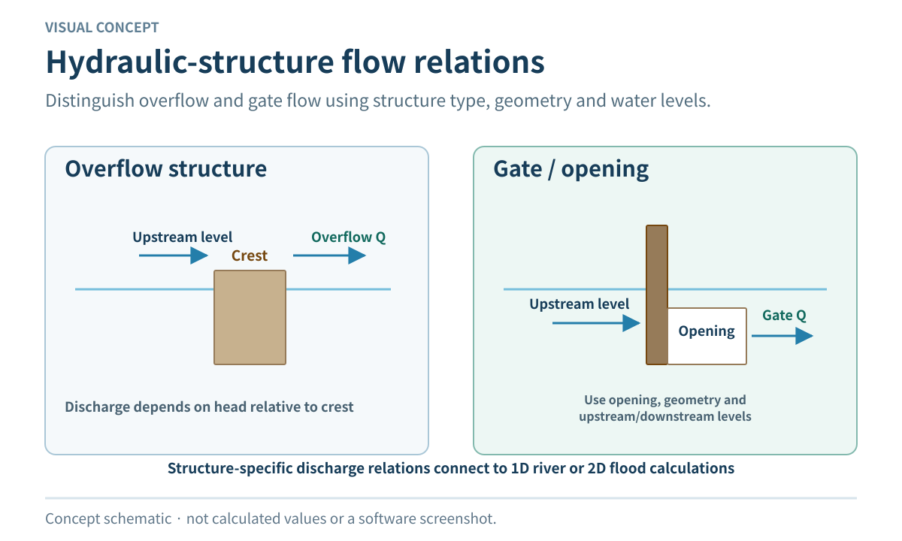
Compare overflow with gate/opening flow and see how discharge Q depends on water levels and structure geometry.
Over-crest and through-opening flows use different hydraulic conditions. Head difference, submergence and opening determine discharge, matched as upstream removal and downstream supply. Separating hydraulics from operating rules distinguishes physical response from release policy.
Structure location, geometry, crest/opening, upstream/downstream stage and discharge relationships.
Representative weir/orifice relations; coefficients, submergence corrections and opening rules follow structure configuration.
Structure discharge, upstream/downstream response and corresponding balance terms.
Theory and data references USACE: hydraulic structures and flow equations ↗
Read the related theory and numerical method →Align crest/stage datum and check free/submerged flow and directional support for the selected structure law.
When examining storage and releases under reservoir operating rules
Stage, storage, release, constraint compliance and downstream effects.
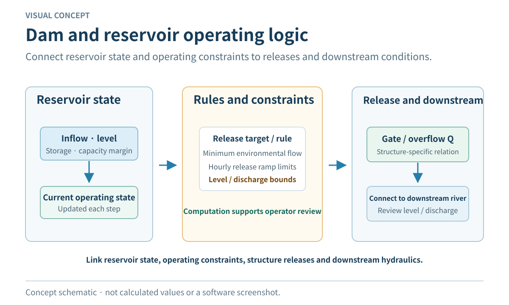
Identify reservoir inflow, release and downstream connections, not recommended release values.
Storage is updated from inflow and release and converted to stage through the H–V relationship. Operating rules consider target stage, available capacity, minimum flow and release ramp limits. In coupled runs, reservoir release and downstream inflow must refer to the same interval; forecast operations and multi-dam scenarios are separate functions.
Inflow, initial stage/storage, H–V relationship, release capacity/rules and minimum flows.
V [m³], Q [m³/s], H [m]. Consistent initial stage/storage is required for the balance reference.
Stage, storage, release, constraint compliance and downstream effects.
Theory and data references USACE HEC-HMS: reservoir routing ↗
Read the related theory and numerical method →Align release-ramp units [(m³/s)/h] with timestep; simulated operations are not direct control commands to real infrastructure.
When exploring release alternatives using inflow forecasts
Pre-release candidates, reservoir/downstream response and constraint evaluations.
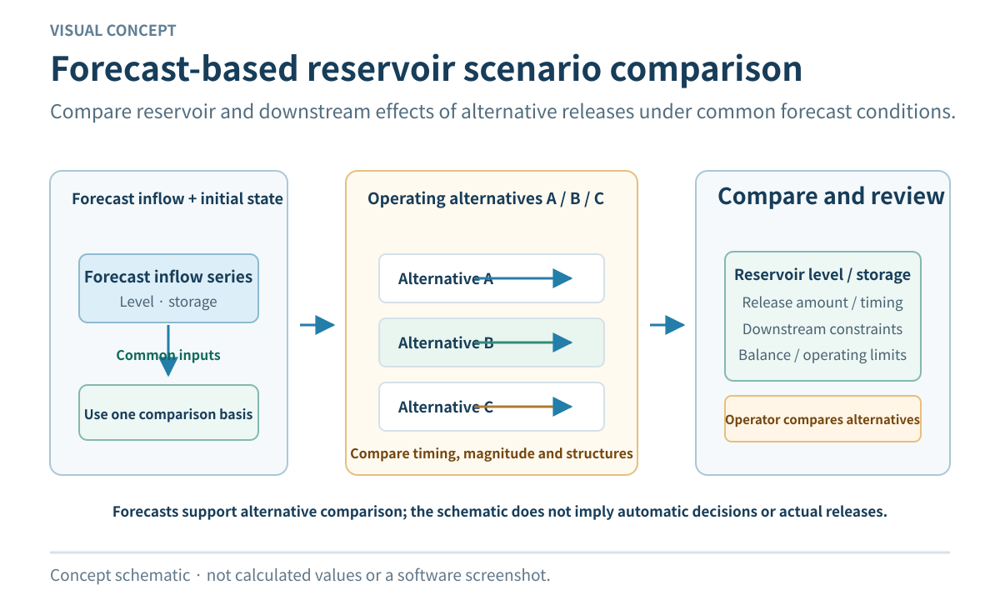
Read forecast inflows, reservoirs and downstream assessment reaches together.
Candidate release plans are simulated from the current state over the forecast horizon, comparing storage, releases and downstream impacts. Flood-control space and downstream constraints are assessed together, with forecast uncertainty treated as a scenario condition. This supports decisions rather than guaranteeing forecasts or universal optimality.
Current reservoir state, forecast horizon/inflow, release capacity/targets and downstream limits.
Pre-release candidates, reservoir/downstream response and constraint evaluations.
Theory and data references USACE HEC-HMS: reservoir routing ↗
Read the related theory and numerical method →Compare alternatives from the same initial state/horizon and reassess when forecasts change.
When comparing operating alternatives across multiple dams
Scenario releases, stages, target flows, constraints and comparison metrics.
For each operating alternative, reservoir states and releases are routed downstream, accounting for timing and superposition at target sites. Common rainfall and initial conditions isolate policy effects. Scenario evaluation is stored separately from baseline outputs, with attention to trade-offs between reservoirs and downstream locations.
Reservoir network, baseline/alternative rules, initial storage, inflow and target sites.
Scenario releases, stages, target flows, constraints and comparison metrics.
Theory and data references USACE HEC-HMS: reservoir routing ↗ · USACE HEC-HMS: Kinematic-wave channel routing ↗
Read the related theory and numerical method →Keep baseline/scenario inputs, files and periods distinct so alternatives do not overwrite source results.
When examining both overflow and return flow
Overflow/return discharge, river-stage feedback, inundation development and exchange balance.
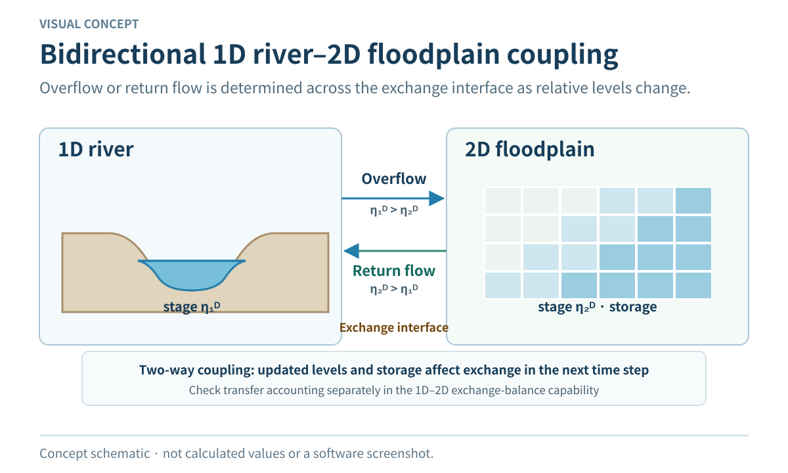
Read how relative 1D and 2D levels switch overflow and return flow, and how the updated levels and storage feed back into the next exchange step.
Development of bidirectional coupling is complete. River and floodplain heads determine exchange at a common interface, with equal/opposite volume changes. Coupling trials restart from the same interval-start states, and only accepted exchange is committed. The current dynamic-wave/local-inertial route is distinguished from one-way postprocessing and other solver combinations.
1D hydraulic state, 2D terrain/depth, banks/interface geometry and exchange interval.
Qex [m³/s], Vex [m³]; positive for overflow and negative for return in this convention.
Overflow/return discharge, river-stage feedback, inundation development and exchange balance.
Theory and data references Bates, Horritt & Fewtrell (2010): local-inertial formulation ↗ · Hodges (2019): conservative finite-volume Saint-Venant forms ↗
Read the related theory and numerical method →Match interface location, crest and section/DEM datums. Equal exchanged water volume does not imply complete coupled momentum conservation.
When exploring flood propagation across a floodplain
Depth, water-surface elevation, velocity, inundation evolution and maxima.
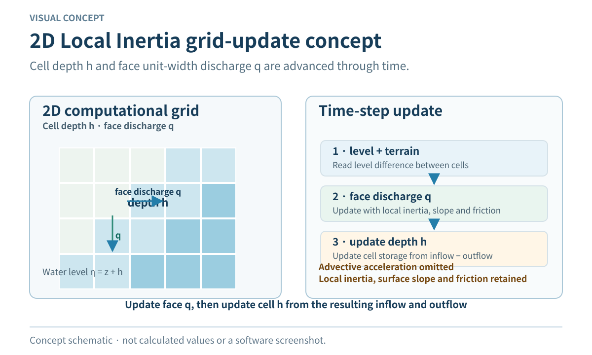
Distinguish cell depth h from face discharge q: update q from water-level differences, then update h from the resulting inflow and outflow.
Development of 2D local-inertial flooding is complete. Face flow combines previous unit-width discharge with pressure-gradient acceleration and semi-implicit friction. Face fluxes update cell storage conservatively and track wetting fronts. Advective momentum is omitted, so this is not the same governing system as Full SWE.
Hydraulic terrain/grid, roughness, initial depth, boundary/exchange inflows, rainfall and drainage.
One-direction local-inertial form: q [m²/s], h and η [m], n Manning roughness. The 2D mass equation connects x/y face fluxes.
Depth, water-surface elevation, velocity, inundation evolution and maxima.
Theory and data references Bates, Horritt & Fewtrell (2010): local-inertial formulation ↗
Read the related theory and numerical method →Assess local-inertial assumptions where advection or rapid transitions matter, together with wet/dry, roughness, timestep sensitivity and balance.
When considering how to represent rapidly changing flow
Depth, velocity vectors, momentum response, flow transitions and inundation.
The Full SWE path conservatively updates mass and both horizontal momentum components. Its implementation includes HLL-family fluxes, spatial/time-order options, terrain, friction and wet/dry treatment. It is a separate selectable path, requiring supported domain/grid/boundary/coupling combinations. Retaining advection does not automatically improve every application.
Supported hydraulic grid/terrain, depth and directional discharge, roughness, boundaries and sources.
h [m], u/v [m/s]; F/G are mass and momentum fluxes and S includes terrain, friction and external sources.
Depth, velocity vectors, momentum response, flow transitions and inundation.
Theory and data references Clawpack Riemann book: shallow-water equations ↗ · Hodges (2019): conservative finite-volume Saint-Venant forms ↗
Read the related theory and numerical method →Small cells and high velocities constrain the timestep. Compare against local inertia using matched inputs, boundaries and resolution.
When balancing domain size and resolution in areas of interest
Multi-resolution mesh, patch results and cost/resolution comparisons.
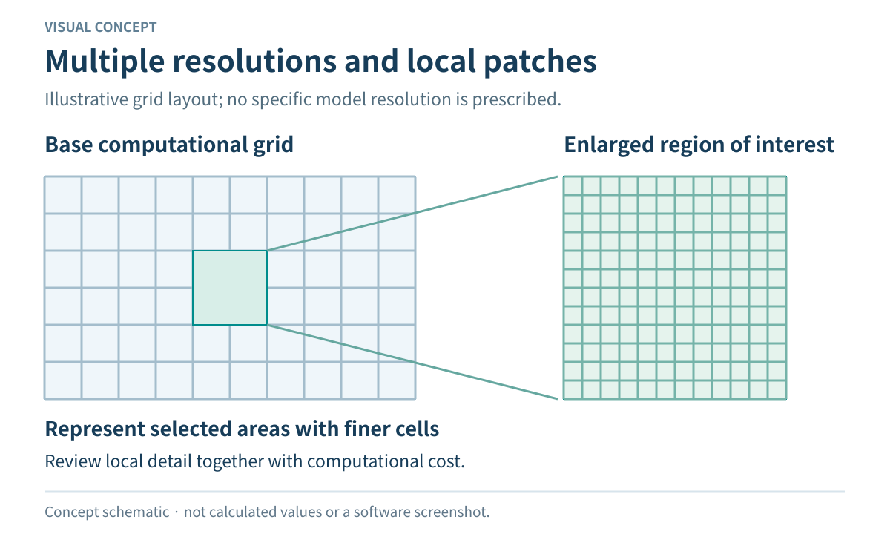
See background cells grouped from one source grid while selected areas retain source resolution.
Background cells aggregate source terrain while patches retain finer detail. Aggregated storage–elevation relationships and shared face volumes connect different cell sizes. This does not invent terrain detail beyond the source resolution, and support differs between local-inertial and Full SWE paths.
Source terrain, selected/recommended patches, aggregation rules and hydraulic connectivity.
Illustrative storage–elevation relation constructed from subcell elevations zk and areas Ak.
Multi-resolution mesh, patch results and cost/resolution comparisons.
Theory and data references Hodges (2019): conservative finite-volume Saint-Venant forms ↗
Read the related theory and numerical method →Check patch-interface conservation and terrain connectivity and compare sensitivity with source-resolution results.
When considering rainfall, drainage and other floodplain processes
Source-adjusted depth, structure flow, concentration fields and particle trajectories.
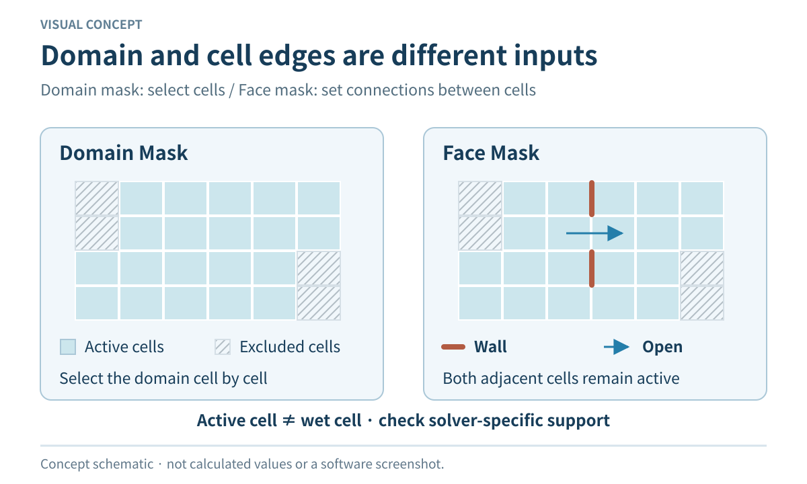
The left panel selects computational cells; the right sets connections between active cells. The same cells can have different edge conditions. Wall/open examples are conceptual; check support for the selected solver.
Rainfall/drainage enter the water balance as sources/sinks and structures modify hydraulic fluxes. Tracer concentration represents transported mass, whereas particles follow computed velocities. Available components are not automatically supported in every solver/grid/coupling combination.
Direct rainfall/drainage, structure geometry/opening, tracer injection and particle starting positions.
Depth h [m], unit-width q [m²/s], and source/sink rates [m/s].
Source-adjusted depth, structure flow, concentration fields and particle trajectories.
Theory and data references Clawpack Riemann book: shallow-water equations ↗ · Unidata: NetCDF data model ↗
Read the related theory and numerical method →Avoid double counting water already entering via the river; particle positions/counts are not reactive water-quality concentrations.
When researching hillslope erosion and deposition
Hillslope sediment generation, transport, deposition and delivery to channels.
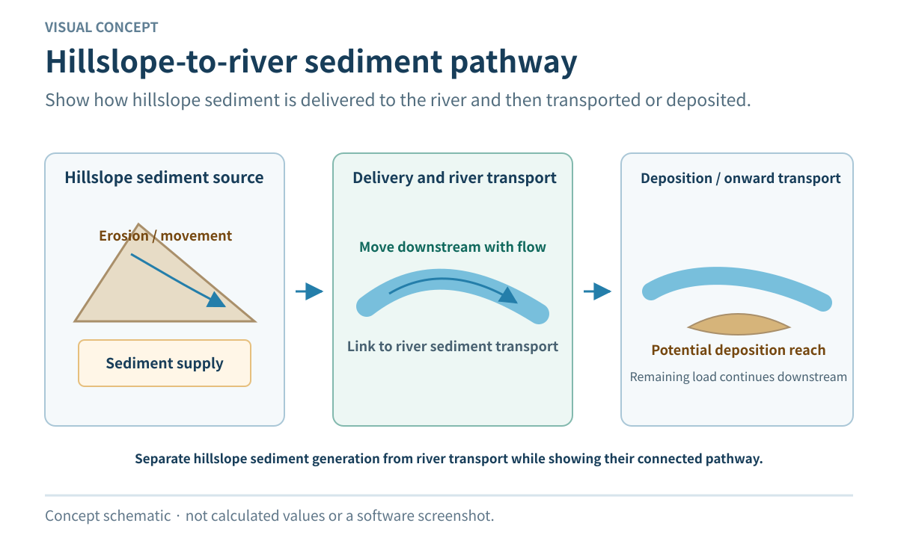
Follow hillslope erosion, transport by flow and downstream deposition.
This research function relates sediment supply to hydraulic transport capacity to calculate movement/deposition. Equal runoff need not imply equal sediment yield because soil and slope differ. Sediment is not a direct conversion of runoff; application requires data consistent with the selected erosion/particle assumptions.
Soil erodibility, slope, runoff/velocity and sediment supply/storage.
Conceptual sediment mass budget, not a substitute for an erosion law and its applicability.
Hillslope sediment generation, transport, deposition and delivery to channels.
Theory and data references K-DRUM: current capability status and scope ↗
Read the related theory and numerical method →Distinguish mass, concentration and volume units and evaluate sediment balance separately from water balance.
When researching sediment transport and deposition in rivers
Reach transport/deposition, sediment export and mass change.
Upstream and hillslope sediment inputs are compared with channel transport capacity to partition downstream transport and deposition. Sediment supply limitation differs from water transport, so accurate flow alone does not establish concentration accuracy. Detailed morphodynamic interpretation depends on the research path’s actual states and outputs.
Upstream/lateral sediment supply, flow, section, slope and transport/storage properties.
Reach transport/deposition, sediment export and mass change.
Theory and data references K-DRUM: current capability status and scope ↗
Read the related theory and numerical method →Match grain-size, section and supply assumptions and do not equate transport functionality with a complete morphodynamic model.
When researching the transport of a conservative substance
Concentration series, transported mass and remaining mass.
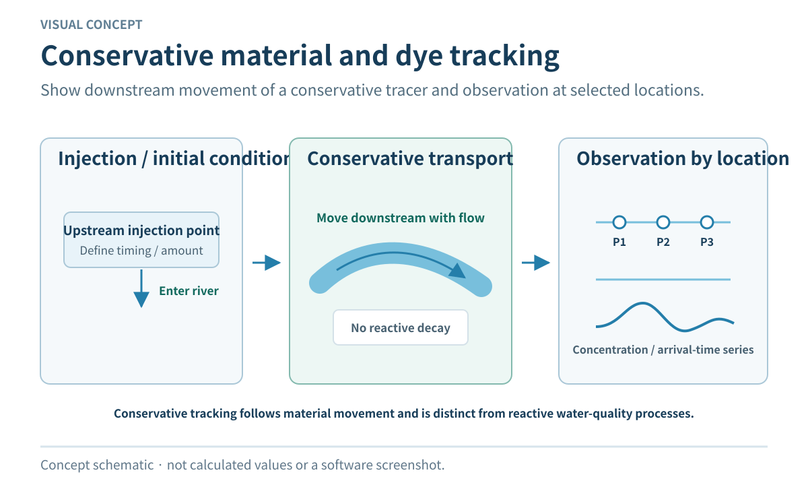
Identify injection and downstream observation locations; colors are not measured concentration classes.
Solute mass is updated with inflow/outflow and divided by water volume to obtain concentration. Concentration reflects dilution and changing storage as well as mass loading. Conservative tracking does not automatically include biochemical reactions or degradation and is distinct from the disabled water-quality process module.
Injection location/time/mass, river storage, connecting flow and initial concentration.
Conservative mixing with M [kg], V [m³] and C [kg/m³].
Concentration series, transported mass and remaining mass.
Theory and data references Clawpack Riemann book: shallow-water equations ↗
Read the related theory and numerical method →Inspect sensitivity at low water volume and reconcile injected, exported and stored mass.
When checking the current availability of water-quality processes
No currently active reactive water-quality output is offered.
Water-quality calculations are disabled in the current build.
Reactive quality requires sources, sinks, reaction kinetics and loading beyond transport. These processes are disabled in the current active build, so sediment or conservative-tracer results must not be presented as nitrogen, phosphorus or BOD outputs. Redevelopment needs consistent equations/units/timestep and independent water-quality validation.
Historical implementations and, for redevelopment, water-quality boundaries, reaction parameters and temperature.
No currently active reactive water-quality output is offered.
Theory and data references K-DRUM: current capability status and scope ↗
Read the related theory and numerical method →Distinguish retained historical code from active capability before expecting quality outputs.
When choosing an execution mode for available computing resources
Timing, parallel efficiency and comparisons of flow, storage and balance between modes.
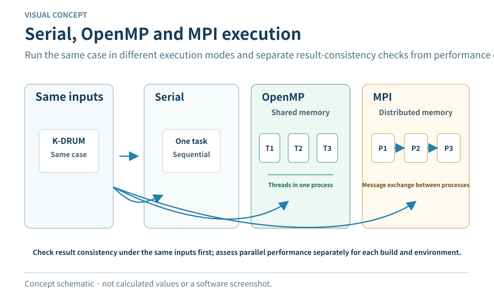
Follow the same inputs into serial, OpenMP and MPI execution. OpenMP uses shared-memory threads and MPI distributed-memory processes; no benchmark is implied.
OpenMP uses shared-memory threads and MPI distributes work across processes. Routing dependencies and network connectivity limit independent work. The source package reviewed here is OMP-focused; historical MPI evidence is distinguished from support in a particular executable. More threads require evaluating synchronization, waiting and I/O costs as well as arithmetic gains.
Domain size/connectivity, executable type, CPU/memory and parallel settings.
T₁/Tp are elapsed times for the same workload and p is worker count; measurement is required.
Timing, parallel efficiency and comparisons of flow, storage and balance between modes.
Theory and data references K-DRUM: MPI distributed rainfall–runoff (2011) ↗ · OpenMP: specifications ↗
Read the related theory and numerical method →Compare both outputs and timings using the same input, host and output configuration; core count alone does not determine speedup.
When reading output variables, coordinates and times in other tools
Self-describing result files for temporal/spatial analysis and viewer integration.
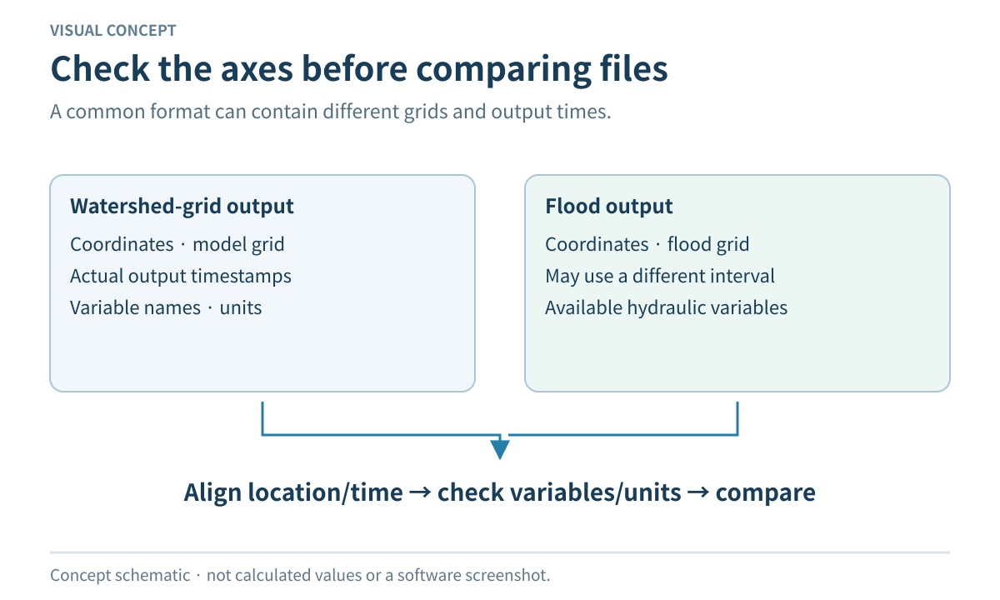
Inspect coordinates, times, variables and units per file. A shared format does not imply a shared grid or timestamps.
Dimensions define axes, variables hold quantities such as depth/flow, and attributes explain units and meaning. A common format does not ensure matching watershed/flood grids, output intervals or time references. Ongoing and finalized files are distinguished, and viewers must interpret actual axes and missing-value markers.
Computed cell/river/flood states, selected variables/intervals and spatial/time reference.
Self-describing result files for temporal/spatial analysis and viewer integration.
Theory and data references Unidata: NetCDF data model ↗
Read the related theory and numerical method →Check dimensions, units, missing values and final timestamp rather than inferring alignment from the extension.
When exploring spatial patterns and time series in model output
Maps, series, maxima and selected-location comparisons.
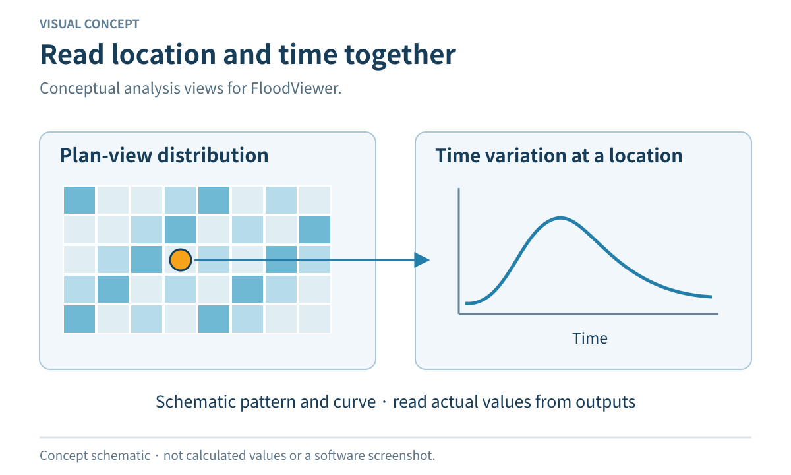
Connect a location on a plan-view map with its time variation. This is not a software screenshot or a simulation result.
Maps display source variables at their actual times and link to selected-location series. Maximum depth differs from depth at one timestamp; color scale and missing/dry-cell handling affect interpretation. A viewer does not replace the solver, and standalone FloodViewer support differs from the new integrated Studio by version.
Supported results, coordinates, time axis, variables and selected points/areas.
Maps, series, maxima and selected-location comparisons.
Theory and data references Unidata: NetCDF data model ↗
Read the related theory and numerical method →Check axes, legend, units and source values; display of partial results does not establish full-run completion.
When assembling source data into a model-input project
Authored projects, diagnostics and engine-compatible inputs.
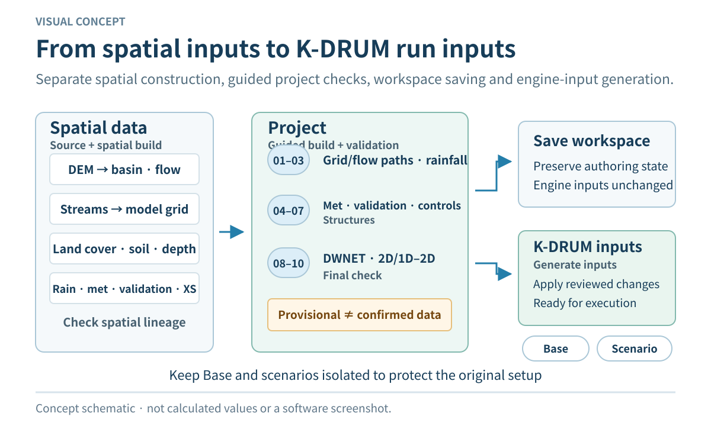
Organize source data into a project, check it and prepare engine inputs. This is not an editor screenshot.
Source data are used to build basin, flow-direction, river and computational-grid inputs, then connected to forcing and hydraulic settings. Workspace persistence is distinguished from engine-input generation, with baseline/scenario isolation. The new K-DRUM Studio is separate integrated project/control/run/analysis work, not merely a renamed InputStudio.
Terrain, land cover, soil/depth, forcing, rivers, sections, structures and boundaries.
Authored projects, diagnostics and engine-compatible inputs.
Theory and data references K-DRUM: current capability status and scope ↗
Read the related theory and numerical method →Do not fill incomplete inputs with invented values; distinguish saving, input generation and execution.
When researching longitudinal and vertical estuarine flow and salinity
Experimental x–z flow/salinity fields and stratification changes.
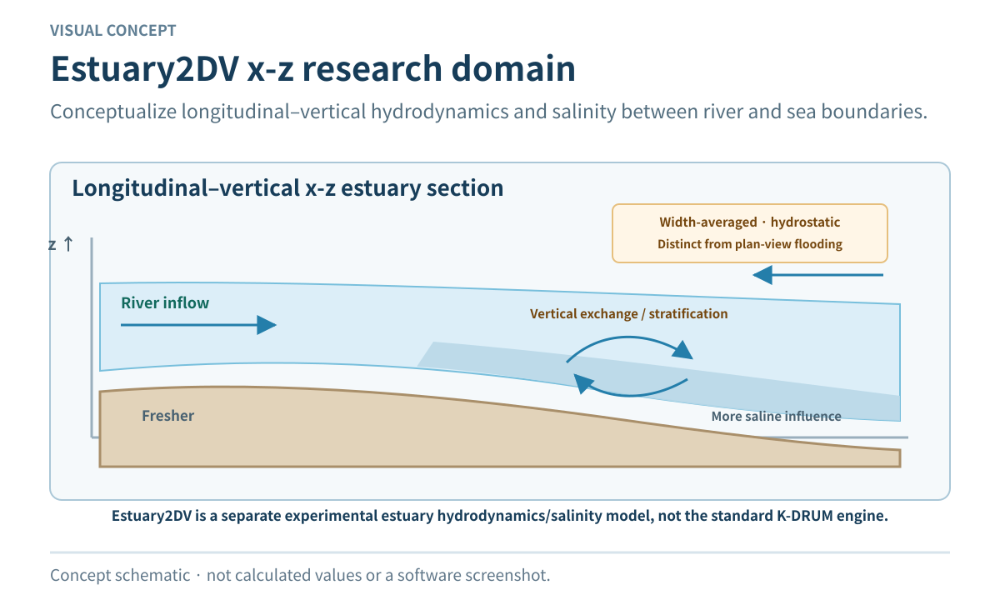
Read river inflow, the tide/sea boundary and vertical exchange in the x-z section. It is a width-averaged hydrostatic research domain, distinct from plan-view flooding.
Unlike plan-view x–y inundation, this model examines vertical salinity/flow structure on an x–z section. Width-averaged/hydrostatic assumptions and version-specific transport/mixing make it distinct from the completed Core river/flood solvers. Salt intrusion and stratification require tidal, salinity, geometry and mixing information.
Estuary profile, depth/layers, upstream flow, tidal/salinity boundaries and initial state.
Experimental x–z flow/salinity fields and stratification changes.
Theory and data references K-DRUM: current capability status and scope ↗
Read the related theory and numerical method →Do not describe 2DV as standard plan-view 2D or a full 3D model; retain its research validation scope.
When comparing longitudinal profiles, cross sections and time series
Longitudinal/cross-section levels, site hydrographs and synchronized comparisons.
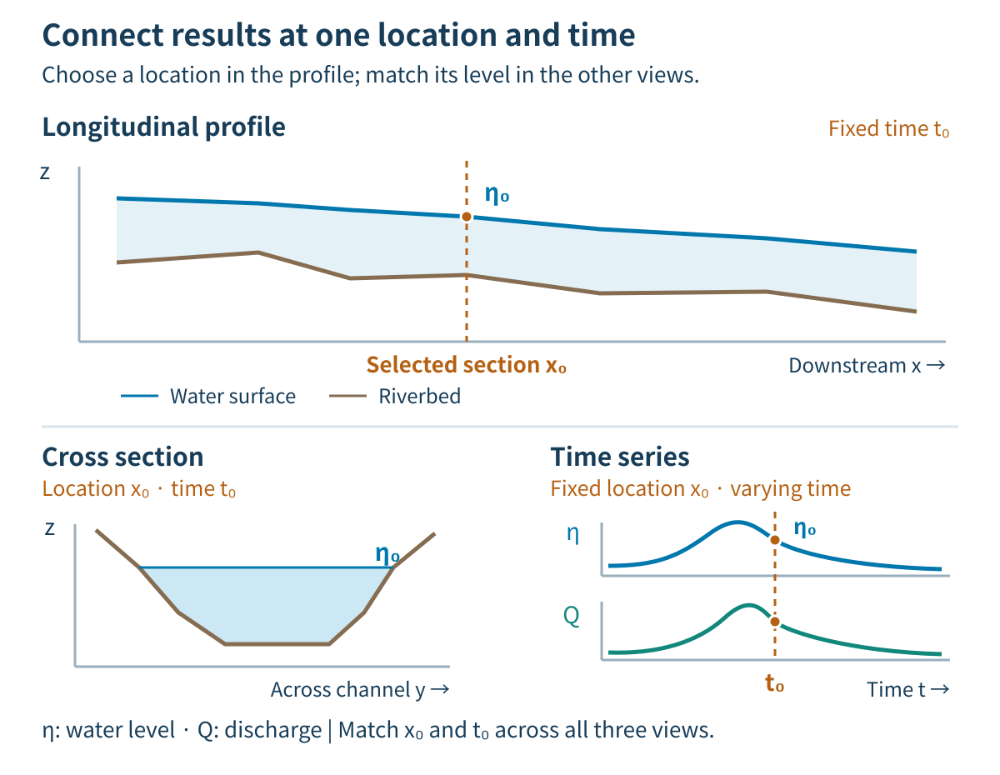
Profiles show along-river change, cross sections show geometry, and time series show temporal change; these are not screenshots.
A common location/time links profile, cross-section and series views. Observed/simulated comparisons require matching sites, times and elevation datums. The established specialist viewer, C# migration candidate and Studio integration have distinct implementation/testing scopes and must not be assumed fully equivalent.
1D network/section results, stage/flow series, observations and display settings.
Longitudinal/cross-section levels, site hydrographs and synchronized comparisons.
Theory and data references Unidata: NetCDF data model ↗ · USACE: 1D unsteady-flow hydrodynamics ↗
Read the related theory and numerical method →Visible plots do not prove preservation of every editing/synchronization feature; compare displayed values with producer data.
These diagrams illustrate temporal and spatial characteristics of results; they are not calculations from a real basin. Run completion, water-balance consistency and observation comparisons are distinct evaluation criteria.
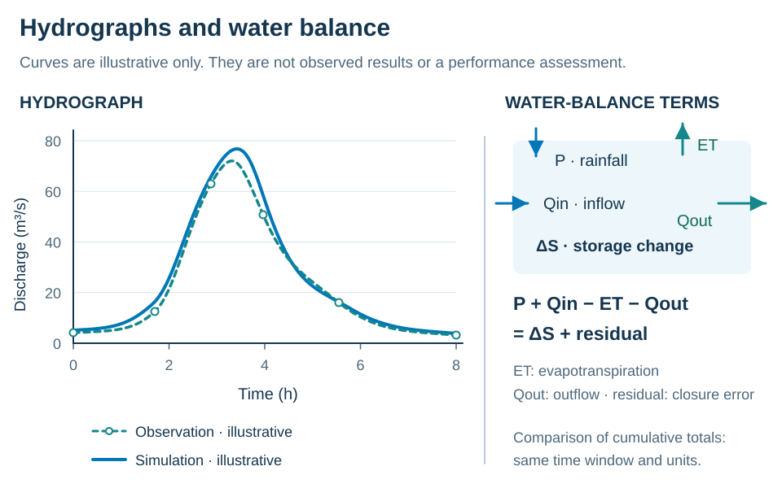
Separate flood-area mapping estimates candidate inundation areas from terrain, water-level sources and an allowed domain. Distinguish it from dynamic 2D depth/flow simulation; first identify which analysis method produced the file.
Rainfall, soil water and runoff distributions support comparison over a common domain and period. Interpret flood outputs within the selected solver, terrain and boundary configuration.
Hydrographs support comparison of observed and calculated peaks, timing and recession behavior using consistent units and time intervals.
Water-balance evaluation uses the definitions and accounting domain of inputs, outputs, storage and losses. Execution success alone establishes neither balance nor predictive accuracy.
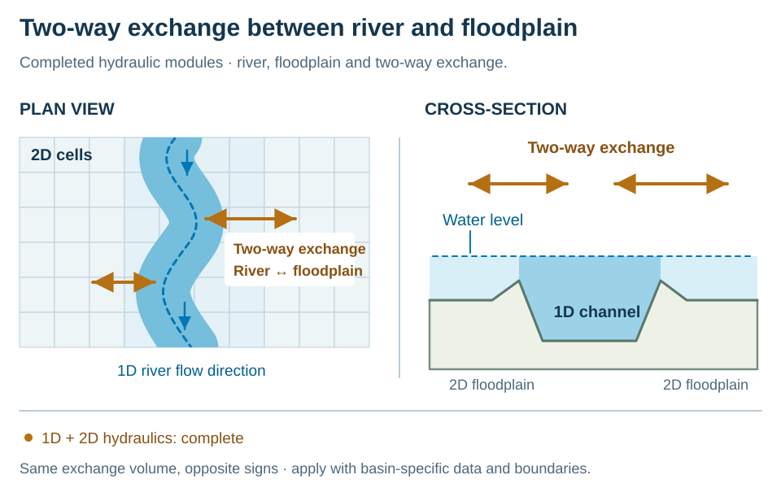
Input preparation, computation, output storage and result analysis have distinct roles across the programs. Each program has its own availability and development status, separate from the established hydrologic foundation.
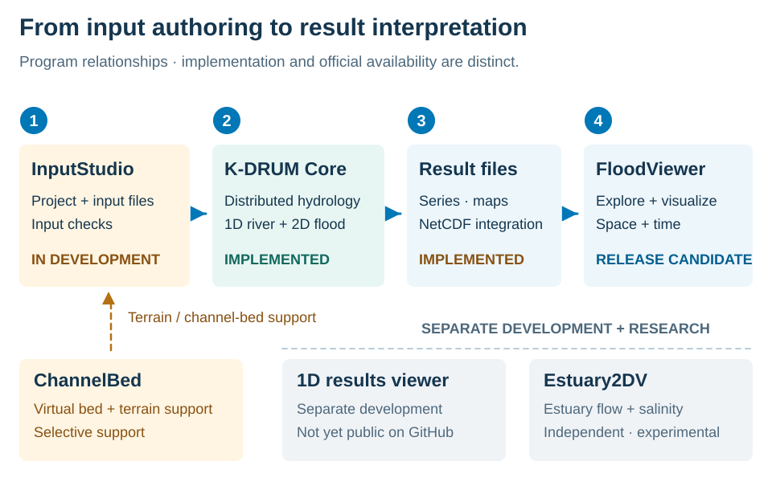
K-DRUM Core is built around established distributed hydrology and kinematic routing. 1D hydraulics, 2D inundation and two-way coupling are completed capabilities; research and disabled modules remain separately identified.
The existing InputStudio focuses on spatial-input/project authoring and pre-run consistency.
Links result maps and time series to examine inundation, depth and velocity.
Supplements submerged channel terrain that a DEM alone cannot resolve using sections and centerline data.
Stores hydrologic/hydraulic outputs in NetCDF with variables, units, coordinates and time metadata.
Links network, longitudinal/cross-section and time-series views for 1D hydraulic result analysis.
Not yet publicly distributed.
A separate research model for width-averaged longitudinal–vertical estuary flow and salinity stratification.
Public studies document K-DRUM applications within the basin settings, input data and scope of each study.
2026
Runoff response after wildfire and extreme rainfall in the Namgang Dam basin
A public 2026 conference presentation examined K-DRUM rainfall–runoff analysis for the Namgang Dam basin affected by 2025 wildfire and subsequent extreme rainfall.
This is a basin application examining runoff response under specific wildfire and rainfall conditions.
This conference research is not evidence of a newly released wildfire module or validated predictive performance across all basins.
분포형 수문 모형(K-DRUM)을 활용한 2025년 남강댐 유역의 산불피해와 이어진 극한 호우가 강우 유출에 미치는 영향 분석 ↗
2024
Exploring integrated watershed–groundwater analysis
Public 2024 conference research examined applications of K-DRUM and K-GW in Jeju and opportunities to improve coupling.
The work distinguished the roles of distributed runoff modelling and a separate groundwater model and considered data and interpretation requirements.
This conference application does not mean that K-DRUM alone solves full groundwater flow or that coupling is validated in the official release.
2017
Coupled analysis of river flow continuing after rainfall ends
A 2017 conference presentation proposed coupling K-DRUM with MODFLOW for long-term water-cycle and low-flow analysis.
The proposed exchange passes K-DRUM deep percolation to MODFLOW as groundwater recharge, then returns MODFLOW baseflow to K-DRUM river runoff.
This 2017 study presents a coupling approach. Current D-layer delayed return and river infiltration are separately implemented hydrologic storage/exchange functions; this paper alone does not validate every groundwater-linkage option in a distributed package.
2013
Long-term runoff simulation with watershed snow accumulation and melt
The application to Pakistan's Kunhar River Basin considered elevation-dependent weather, snow accumulation and melt in long-term runoff simulation.
GIS spatial inputs and elevation-dependent temperature and rainfall inputs were used to calculate long-term discharge with snow accumulation and melt.
This 2013 study concerns one mountain basin. Snow processes are supported by the public research record; application elsewhere still requires suitable weather inputs and basin-specific validation.
2012
Watershed flood-runoff simulation with rainfall varying across space and time
The study examined radar-driven flood-runoff simulation for typhoon and convective storms in Korea's Namgang watershed.
Radar rainfall was mapped to computational grids, with hydrologic inputs derived from DEM, land-cover and soil data. Infiltration and surface/subsurface runoff were represented, and flow was routed through the channel network using kinematic waves.
This 2012 storm-event study supports the hydrologic foundation. It is distinct from application-specific validation of the now-completed 1D dynamic-wave and 2D flood capabilities.
Development and application of GIS based K-DRUM for flood runoff simulation using radar rainfall ↗
Find official K-DRUM distributions through MyWater K-Series. This website does not directly distribute executables.
K-DRUM · COMMUNITY
Share questions and ideas, and build a reusable public knowledge base for K-DRUM.
Questions and replies may be written in Korean or English. Use 'New discussion' to write a post. Posts are public and a GitHub account is required to contribute.
Installation, input preparation, simulations and interpretation
Usability issues, reproducible problems and improvement requests
New model capabilities, applications and technology sharing